致读者 For the Reader
本书从顶级守门员的需求出发撰写，但书中所呈现的一切同样适用于所有守门员。本书的内容对不同职业生涯阶段的守门员可能有不同的启发。随着职业生涯的发展，你可以随时回到本书，在球技和技术不断进步的过程中获得新的见解。
本书前几章讨论守门理论，随后的章节则聚焦于更实战层面的守门各个方面。本书理论部分的目的是提供充分的依据和推理，帮助读者理解作者所呈现的选择和方案。守门员宝典并非科学出版物或学术研究，尽管其中部分内容可能给人留下这种印象。在那些具有特定科学方法的章节中，我们选择应用操作分析方法，这是一种科学方法，重点在于研究对象与作者之间的紧密联系，以及作者基于其对该主题的知识和理解所做出的解释。操作分析方法是一种理论与经验知识之间的对话，作者在其中力求逻辑地证明他们所呈现的选择。
众所周知，软式曲棍球在非英语国家更为流行和普及。因此，关于软式曲棍球，特别是软式曲棍球守门的英语相关内容相对较少。所以，在编写守门员宝典英文版时，我们尽最大努力寻找适合的术语和表达方式，使所使用的术语在软式曲棍球和软式曲棍球守门的语境中能够适用且易于理解。
This book is written from the requirements of the top goalkeepers' point of view but at the same time everything presented herein applies equally to all goalkeepers. The contents of the book might unfold in a different way to goalkeepers in different stages of their careers. As your career progresses, you can always return to this book and experience new insights as your playing and skills develop.
The first Chapters of the book discuss the theories of goalkeeping, and the Chapters following thereafter focus on the different aspects of goalkeeping on a more practical level. The purpose of the theory section of the book is to provide sufficient grounds and reasonings to help the reader understand the choices and solutions presented by the authors. The Goalkeeper Playbook is not a scientific publication or a study although there are some contents that might give that idea. In those parts of the book, which have a certain scientific approach, we have chosen to apply the operational analytical method, which means a scientific method where the focus is on the close connection between the subject and the authors as well as the interpretations made by the authors based on their knowledge and understanding on the subject.
As we all know, floorball is more popular and mainly played in non-English speaking countries. Therefore, the amount of relevant English language content available about floorball and floorball goalkeeping especially, is relatively low. So, when putting together the English language version of The Goalkeeper Playbook, we have done our best in trying to find the terms and expressions that are fit for purpose.
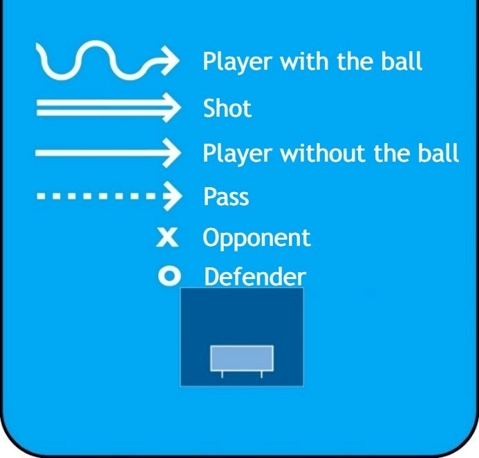
第1章 引言——从混沌到秩序 The Introduction – from Chaos to Order
蝴蝶效应是混沌理论中使用的一个比喻，说明一只蝴蝶扇动翅膀可能在地球的另一端引起一场风暴。混沌理论由 James Yorke 和李天岩于1975年首次提出。根据该理论，世界并不遵循可预测的模式。混沌既是人类生活的一部分，也是软式曲棍球守门的一部分。变化发生在短暂的瞬间，预测特定事件的后果是不可能的。混沌理论通常与数学或物理学相关联，但这些科学领域也直接影响着日常生活。很少有理论能像混沌理论那样对人类活动和理解产生如此直接的影响。
混沌理论可以为我们理解复杂系统提供一种方法。在我们看来，混沌理论可以被视为在软式曲棍球守门员理解比赛和系统性行动方面，与以解决方案为导向的思维进行类比。在混沌理论的非线性世界观中，球队和比赛可以被视为动态的、互动的和发展的系统，具有快速变化的现象、混沌时刻和灾难。混沌理论告诉守门员，比赛中一个事件或一个情境的结果取决于多个不同的变量。在这项快节奏的运动中，守门员往往很难预测这些不同变量如何影响结果。一个误差边际或一个变化瞬间可以在最后一刻改变一切。有时比赛中一个微小的变化可能产生重大影响，使整个局势陷入混沌。
人们试图避免混沌，这是一种获得安全感的方式。然而，根据混沌理论之父 James Yorke 的说法，人们应该随时准备改变自己的计划。Yorke 的理论在很大程度上基于另一个称为"黑天鹅"的理论，由数学家和经济学家 Nassim Nicholas Taleb 创立。Taleb 在其以该理论命名的书中解释道，在肉眼看来，一切似乎都是可预测的。然而，某些混沌或奇怪的事情随时可能发生，就在你最意想不到的时候。在软式曲棍球——世界上最快的球类运动之一中，这对守门员来说意味着一种挑战。
The butterfly effect is a metaphor used in chaos theory, explaining that a butterfly flapping its wings could cause a storm on the other side of the planet. The chaos theory was first presented by James Yorke and T. Y. Li in 1975. According to the theory, the world does not follow a predictable pattern. Chaos is a part of the human life as much as it is a part of floorball goalkeeping. Change happens in short moments, and it is impossible to predict the consequences of certain events.
The chaos theory can provide a means for understanding complex systems. To our way of thinking, the chaos theory can be regarded as an analogy to solution-oriented thinking in the context of the floorball goalkeeper's understanding of the game and systematic actions. In the non-linear worldview of the chaos theory, teams and the game can be regarded as dynamic, interactive and developing systems with rapidly changing phenomena, chaotic moments and disasters.
守门员的悖论（The Goalkeeper's Paradox）
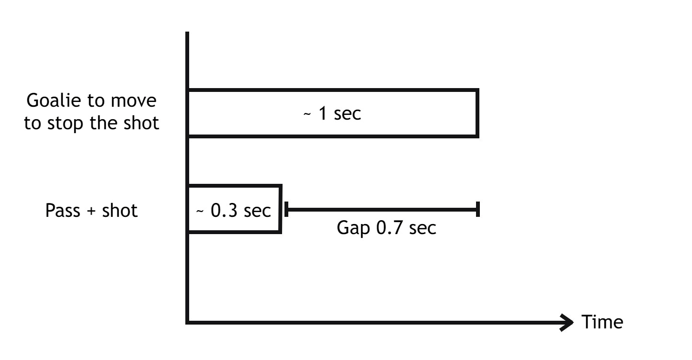
黑天鹅意味着一种不太可能发生的事件，具有三个典型特征：它是不可预测的，它具有重大影响，而且我们可以为其找到一个解释使其看起来不那么随机和更具可预测性。根据 Taleb 的说法，人们被引导去学习细节，尽管我们实际上应该关注大局。人们倾向于关注已知的事物，而一再忽视未知的事物，这使他们暴露于简单化的风险之中。守门员宝典旨在为混沌理论的假设——一切影响一切——提供答案。在软式曲棍球中，比赛的快速度与守门员相对较慢的移动（这在一定程度上是由于缺乏自然力产生）相结合，为守门员的系统性计划和行动创造了明确的需求。
我们将这一问题呈现为守门员的悖论（见 Image 1）：守门员需要1秒来移向传球并做出扑救，而场上球员只需0.3秒就可以传球并射门得分。0.7秒的差距从软式曲棍球守门员的角度来看是一个显著的鸿沟。弥补这一差距的最重要因素是准备。在第2.3节"一次扑救的组成要素"中，我们将解释扑救本身只是蛋糕上的樱桃——当守门员的表现被分解为各个单独动作时。准备的重要性在单独的比赛情境以及守门整体中都被强调。良好的准备使守门员能够应用合适的技术，进而使守门员能够及时位于射门线路上以完成扑救。
Black swan means an unlikely event that has three typical characteristics: it is unpredictable, it has a significant impact, and it is possible to come up with an explanation for it that makes it seem less random and more predictable than it is. According to Taleb, people are led to learn details although we should in fact be focusing on the big picture instead.
We are presenting this matter as the goalkeeper's paradox (see Image 1) where it takes 1 second for the goalkeeper to move towards a pass and make a save but it only takes 0.3 seconds for the field players to pass and shoot a goal. The difference of 0.7 seconds is a significant gap from the floorball goalkeeper's point of view. The most important factor in closing this gap is preparation. Good preparation enables the goalkeeper to apply a suitable technique, which, in turn, enables the goalkeeper to be in the line of the shot in time to make a save.
守门金字塔与守门拼图（The Goalkeeping Pyramid & Puzzle）
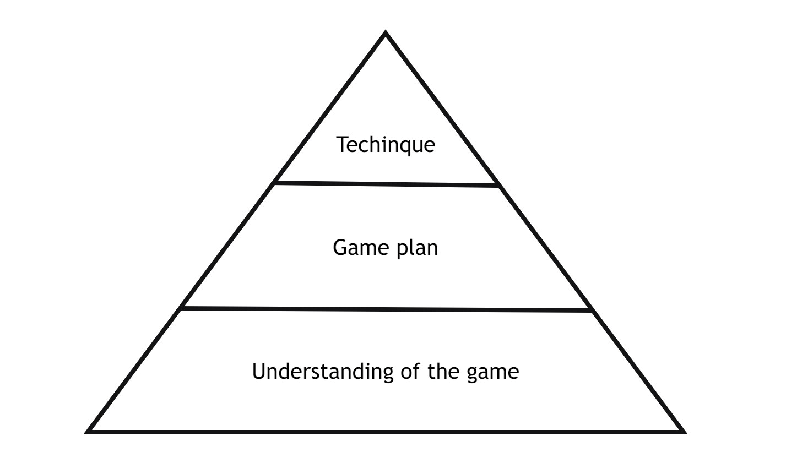
在本书中，我们使用"比赛计划"这个术语，不是指针对某场比赛的计划，而是描述守门在总体层面上的系统性。比赛计划的核心是在单次得分尝试中以最高可能概率完成扑救。为了能够遵循比赛计划和战术，守门员需要对比赛有良好的理解（见 Image 2）。
守门可以被比作国际象棋。守门员要能够回应持球场上球员的移动，就必须知道该球员即将做什么。没有先验知识或直觉，在国际象棋中不可能做得好，在软式曲棍球中也是如此。仅仅通过观察和反应对手的移动，在这两项运动中都不太可能成功。
在快节奏的运动中，守门员必须根据概率自动识别和选择每个比赛情境中的最佳操作模式。由于比赛涉及意外事件和随机性，守门员还应牢记每种情境的备选方案。
In this book, we use the term game plan, not to refer to a match-specific plan, but to describe the systematic nature of goalkeeping on a general level. At the core of the game plan, is making a save in an individual scoring attempt with the highest possible probability.
Goalkeeping could well be compared to chess. For the goalkeeper to be able to respond to the move of the field player with the ball, they must know what the player is about to do. Without the prior knowledge or hunch, it is not possible to do well in chess, nor in floorball.
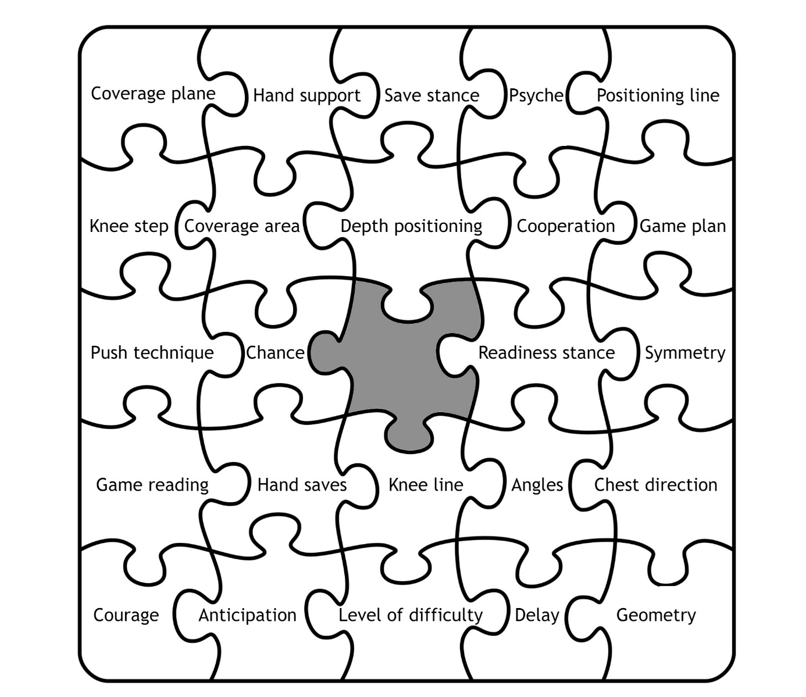
在守门拼图中（见 Image 3），每一块都必须各就各位，形成一个相互影响的综合网络。这个网络对于为守门员创建比赛计划也是必要的。仅仅缺少一块拼图就可能给守门员带来重大困难。如 Image 3 所示，一些守门要素彼此之间有直接影响——例如，守门员脚踝的位置对平衡有直接影响。而另一些因素则有间接影响，意味着效果稍后才显现。脚踝的位置对守门员的站姿有间接影响，从而影响力产生，这反过来影响守门员到达下一条定位线的速度，最终影响射门时覆盖面积的大小。
In the goalkeeping puzzle (see Image 3), each piece must fall into place to form a comprehensive network of factors affecting one another. This network is also necessary in creating a game plan for the goalkeeper. Missing just one piece can cause significant difficulties to the goalkeeper. As image 3 shows, some components of goalkeeping have a direct effect on each other. For example, the position of the goalkeeper's ankles has a direct effect on balance. Whereas some of the factors have an indirect effect, meaning that the effect appears later.
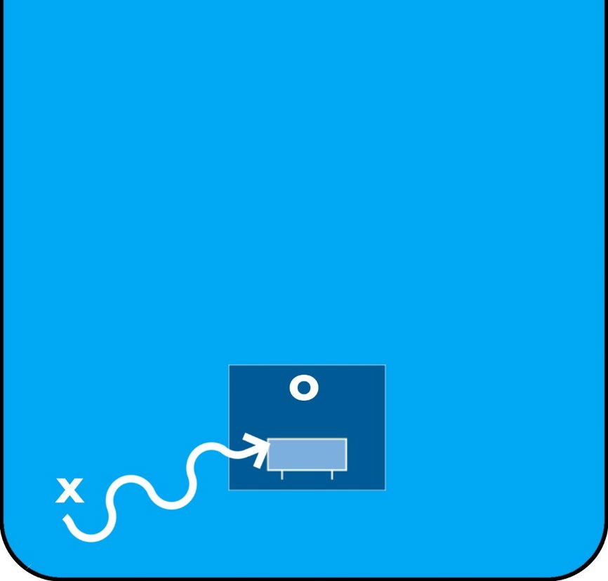
第2章 比赛 The Game
2.1 阅读比赛（The Game Reading）
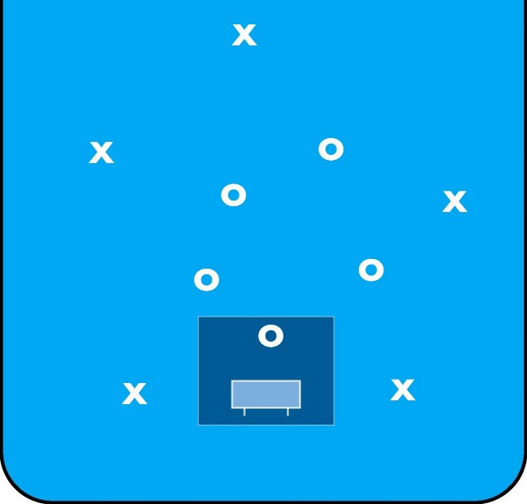
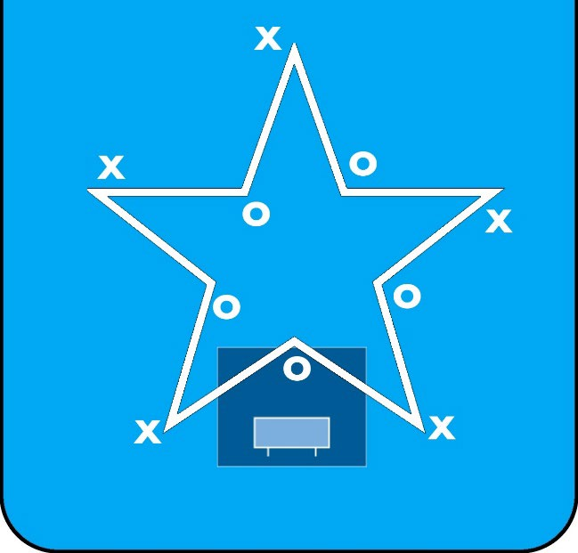
在本书中，我们使用"阅读比赛"这一术语，这是体育界广为人知且经常使用的表达。在我们看来，该术语还应该涵盖对比赛的深度解读，因为阅读比赛可以发生在多个层面。阅读比赛可以像阅读一本书一样：可以机械地阅读，不对内容进行深入思考。但要吸收和消化你所读的一切，你需要以专注和深思熟虑的方式阅读。阅读比赛也是如此。在软式曲棍球中，重点是经过充分论证的高质量训练，从而将从比赛中解读的各种参数反映到守门员自己的行动中，并进一步最大化扑救概率。
In this Playbook we use the term game reading which is a well-known and frequently used expression in sports. To our way of thinking, the term should also cover strong interpretation of the game, as reading the game may happen on rather many levels. Reading the game can be done much in the same way as reading a book: mechanically without a deeper thought about its content. But in order to take in and digest everything you read, you need to read in a focused and thoughtful manner. The same goes for reading the game.
2.2 延迟（The Delay）
当比赛的实际事件与守门员自己的解读不同时，很容易导致守门员行动的延迟。守门员可以通过基于对比赛理解的系统性行动和规划来最小化延迟。如果没有规划或不以系统的方式进行，延迟始终存在，因为守门员唯一能做的就是对接已经发生的事件做出反应。这种仅基于反应型的打法不可能带来高水平的表现。
无论是在顶级国家联赛还是低级别联赛中，每个守门员都在与延迟作斗争。每个守门员都会意识到自己有时行动稍慢。如果守门员仅仅通过对接已经发生的事件做出反应来进行比赛，在像软式曲棍球这样快节奏的运动中，比赛会变得越来越困难，超出守门员自身的技能水平甚至超出人类表现的极限。
When the actual events of the game differ from the goalkeeper's own interpretation, it can easily cause delay in the goalkeeper's actions. The goalkeeper can minimise delay by systematic actions and planning, which are based on the understanding of the game. Without planning or doing things systematically, the delay is always present as the only thing the goalkeeper can do is react to events that are already happening.
Whether playing on the top national level or lower levels, every goalkeeper fights against delay. Every goalkeeper recognises that they are sometimes a little late to act. If the goalkeeper only plays by reacting to events that are already happening, in such a fast-paced sport as floorball, playing becomes increasingly difficult, beyond the goalkeeper's own skill level and even beyond human performance.
2.3 一次扑救的组成要素（The Components of a Save）
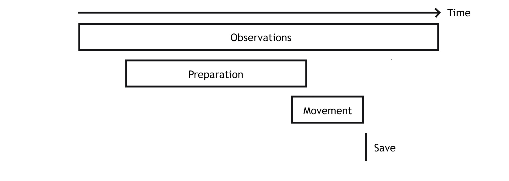
球击中守门员——即一次扑救——是一个相当重要、相对容易计算的事件，它具体化了最大化扑救概率的过程。然而，这个仅持续百分之一秒的非常短暂的时刻，是之前许多正确完成的动作的结果。在本节中（见 Image 6），我们在时间轴上列出了扑救的组成要素，以说明成功完成一次扑救所需的条件。最大化扑救概率是多个步骤和动作的总和，每个步骤和动作都需要仔细关注和练习。
守门员的核心是守门员对比赛的解读，以及守门员如何根据从比赛当前和即将发生的事件中接收和处理的信息来调整行动。在整个比赛过程中，守门员都在观察和解读比赛。当对手控球时，观察更为密集。但当己方球队进攻时，守门员也在接收关于潜在未来事件的宝贵信息，例如对手可能的反击是如何组织的。
The ball hitting the goalkeeper, i.e., a save, is an event, which is quite significant, relatively easy to calculate and concretises the maximisation of the probability of a save. However, this very brief moment, lasting only a hundredth of a second, is the result of a numerous preceding actions that have been done correctly. In this Chapter (see Image 6), we have laid out the components of a save on a time axis, to illustrate what is required to perform a successful save.
In the core of goalkeeping are the goalkeeper's interpretation of the game and how the goalkeeper adjusts the actions to the information which is received and processed out of the current and coming events within the game.
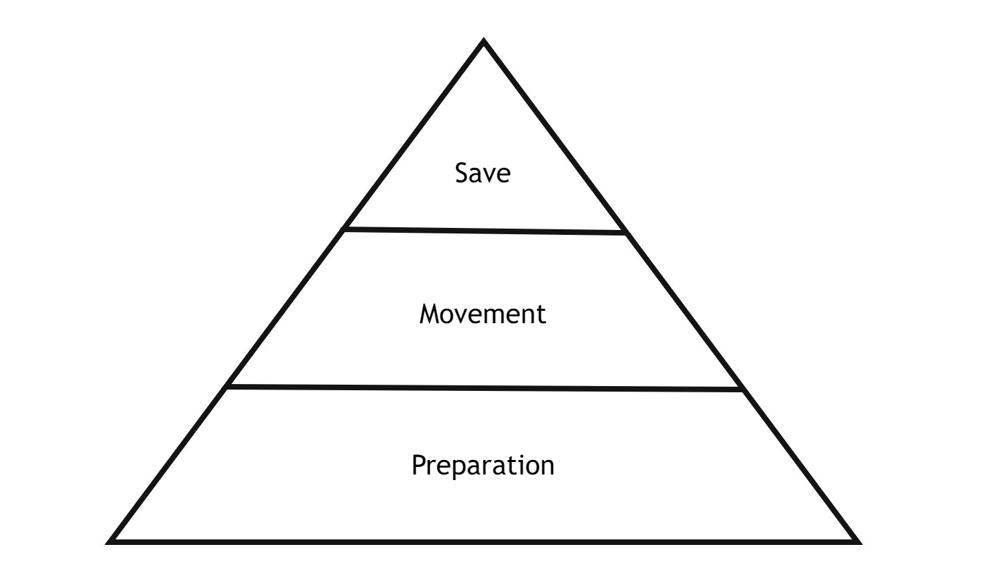
2.4 表现水平作为难度的函数（The Performance Level as a Function of Difficulty）
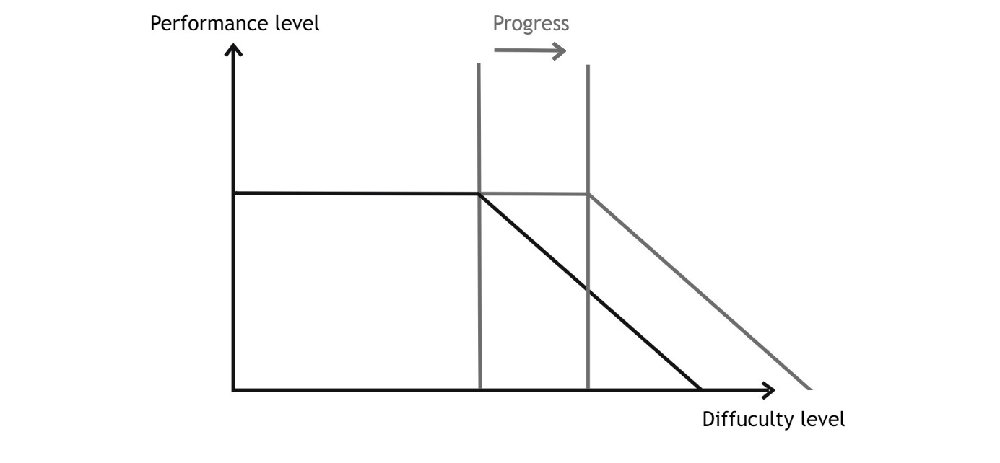
比赛是一个复杂的环境，衡量守门员和场上球员在非常紧张的情况下解决问题的能力。在守门员教练和训练中，通过技术训练来教授流畅的移动相对容易，这当然很重要，但守门员也应能将训练中学到的东西应用到实际的真实比赛情境中。本节旨在说明训练和实际比赛之间的这种差距——除非得到适当处理，否则这种差距可能会不必要地变大，并对守门员的表现产生负面影响。
The game is a complex environment that measures the goalkeeper's and the field players' problem-solving skills under very hectic circumstances. In goalkeeper coaching and training it is rather easy to teach smooth movement by technique training drills, which of course is important, but goalkeepers should also be able to apply what they have learned in training sessions to actual real-life game situations.
2.5 阅读比赛的不完美性（The Imperfection of Game Reading）
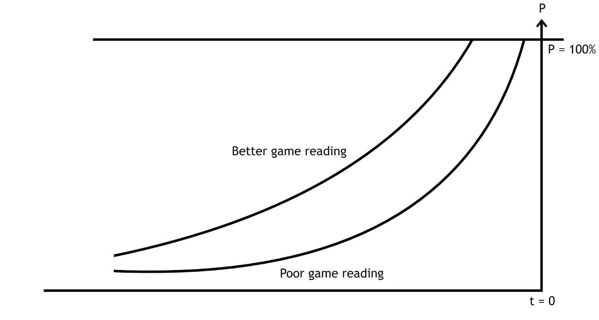
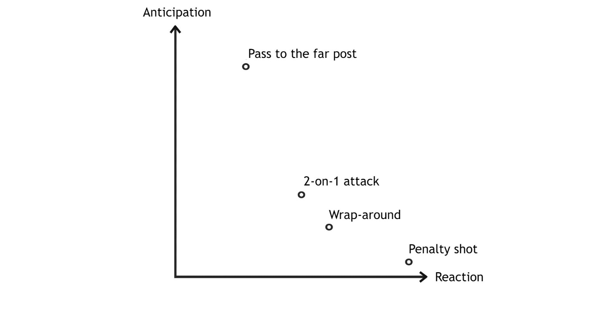
无论守门员多么善于阅读比赛，守门员永远无法绝对确定地知道未来。这意味着对未来事件的预判不应过于大胆，也不应过于提前。很可能预测的情境根本不会发生。行动过早会让对手轻松得分，如果守门员已经开始针对一个永远不会发生的预测情境进行比赛。而准备和行动过晚则会完全沦为反应型打法，意味着守门员在大多数时候都无可救药地迟到。
Regardless of how well the goalkeeper can read the game, the goalkeeper can never know the future with absolute certainty. This means that anticipation on future events should not be made too boldly nor too far in advance. It may very well be that the predicted situation might not happen at all. Acting too early gives the opponent an easy opportunity to score a goal if the goalkeeper has started to play an anticipated situation that never happens.
2.6 偶然因素及其控制之道（The Element of Chance and How to Control It）
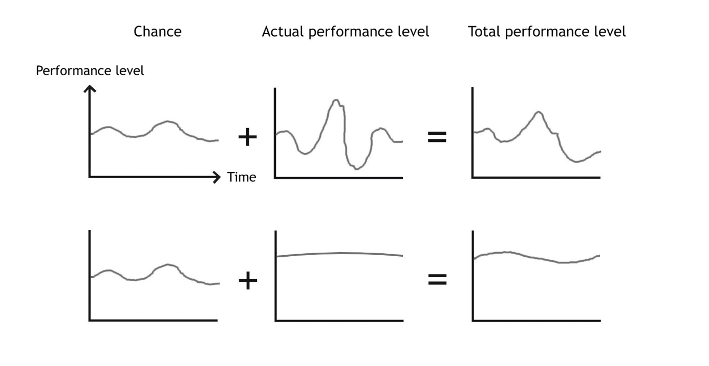
生活中充满了偶然，因为自然趋向于无序。而人们则试图为混沌带来秩序，使世界更容易感知和控制。在比赛中，也有许多事情不受任何人掌控，完全随机且偶然发生。通过自己的行动，守门员可以影响比赛中大部分事件，从而通过努力使那些对守门员更有利的事件以更高的概率发生，来最小化偶然因素的影响。
守门员的总体表现水平是偶然因素和守门员自身行动的总和。在实践中，你无法影响偶然因素，但随机事件始终存在，这在大尺度、长期的视角下可以被视为常数。既然你无法控制偶然因素，就不值得为之担忧。然而，你可以影响的是自己的表现。通过使用经过充分论证和练习的操作模式，在任何情况下都可以最大化扑救概率，从而在大尺度上使失球数尽可能低。
Life is flooded with chance as nature strives towards disorder. People, in turn, try to bring order to chaos to make the world easier to perceive and control. Also, in the game there are many things that are not in anyone's hands so to speak, but entirely random and happen by chance.
The total performance level of the goalkeeper is the sum of the element of chance and the goalkeeper's own actions. In practice, you cannot influence the element of chance, but random events are always present so this can be regarded as constant in the long-term and large-scale perspective. As you cannot control the element of chance, it is not worth worrying about. However, what you can influence is your own performance.
第3章 软式曲棍球守门的建模与验证 The Modelling and Verification of Floorball Goalkeeping
3.1 对称性（Symmetry）
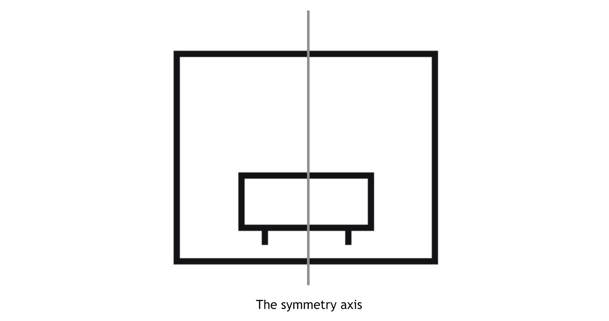
软式曲棍球场地是对称的，就像人类在很大程度上也是对称的一样。所有守门员的行动都应以场地的纵向中线为对称轴（见 Image 12）保持对称。这适用于站姿、移动和扑救。通过以对称轴为基准对守门进行建模，可以创造使得分概率尽可能低的局面。
就守门员的站姿而言，对称性意味着最小化身体左右两侧技能和能力的固有差异。因此，守门员不应仅仅因为更容易就更偏好优势侧而非劣势侧。站在定位线上是最大化扑救概率的良好起点。在最大化扑救概率方面，守门员站姿的重要性也应被考虑。
The floorball field is symmetrical, just like humans are for the most part. All goalkeeper's actions should be symmetrical in relation to the lengthwise centre line of the field, which we call the symmetry axis (see Image 12). This applies to the stance, movement and making saves.
In terms of the goalkeeper's stance, symmetry means minimising the inherent differences in the skills and abilities of the left and right side of the body. Hence, the goalkeeper should not prefer the dominant side over the non-dominant one just because it is easier.
3.2 定位线（The Positioning Line）
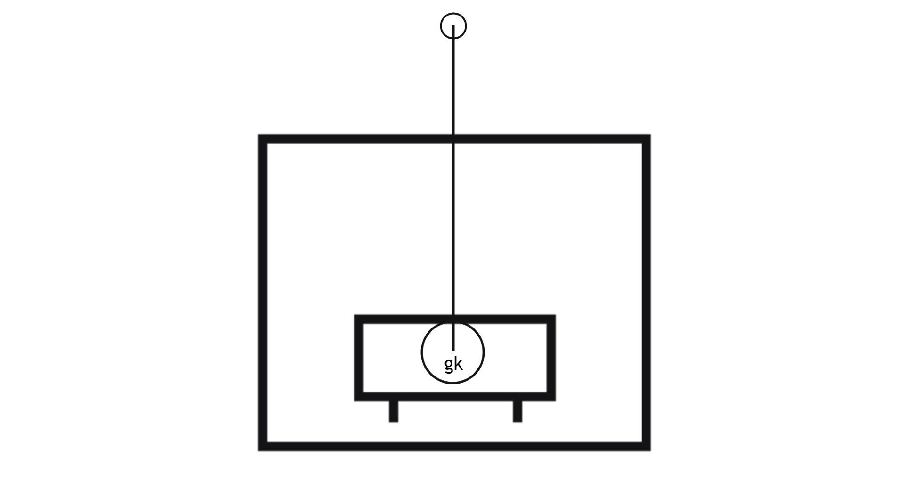
为了最大化扑救概率，守门员应在 t = 0 时刻——即球到达覆盖平面的时刻——位于定位线上。定位线（简称 PL）是指球门中心与球的位置之间绘制的连线（见 Image 13）。定位线可用于对软式曲棍球守门中的许多事项进行建模和验证。如果守门员能够在 t = 0 时刻之前就位于定位线上，守门员就有更好的机会达到稳定站姿，从而增加用手完成扑救的概率。
In order to maximise the probability of a save, the goalkeeper should be positioned on the positioning line at the moment t = 0, i.e., at the moment the ball reaches the coverage plane. The positioning line, or the PL for short, means the line drawn between the centre of the goal and the location of the ball (see Image 13).
3.3 覆盖平面——黑/白/灰（The Coverage Plane – Black / White / Grey）
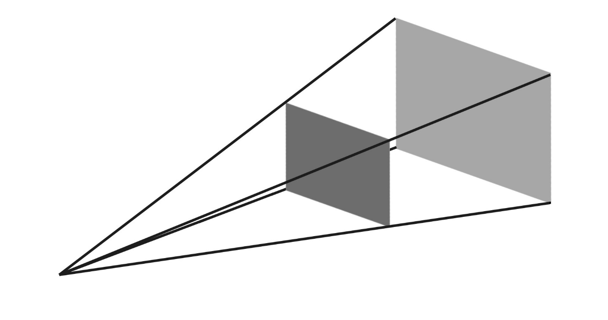
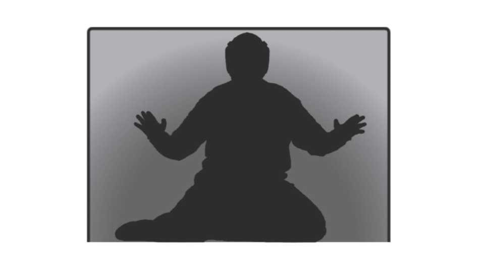
覆盖平面是一个有助于理解不同比赛情境中扑救概率的概念。覆盖平面可用于说明操作模式和方法，以及以较高的准确性分析比赛。
覆盖平面可分为三个区域：
- 黑色区域：球无法进入球门的区域。守门员通过自己的身体形成黑色区域，在此区域内扑救概率为 100%。当黑色区域在所有情境中都尽可能大时，总体扑救概率最高。
- 白色区域：守门员根本无法完成扑救的区域。这种区域只在守门员站位不佳时形成——即在 t = 0 时刻远离定位线。如果打法正确明智，比赛中不应形成这种区域。
- 灰色区域：守门员在射门时刻不在的位置，但扑救在物理上仍然可能的区域。在实践中，这主要指动态执行的手部扑救。扑救的概率可以通过不同深浅的灰色来表示。灰色越深，扑救概率越高。
The coverage plane is a concept that helps to understand the probabilities of making a save in different game situations. The coverage plane can be used to illustrate operating models and methods as well as to analyse the game with good accuracy.
The coverage plane can be divided into three areas:
- The black area, where the ball cannot enter the goal. The goalkeeper forms the black area by their own body, so in this area the probability of a save is 100%.
- The white area, where the goalkeeper is simply not able to make a save. Such area is formed only under circumstances where the goalkeeper is weakly positioned.
- The grey area, where the goalkeeper is not present at the moment of the shot, but where making a save still is physically possible. In practice, this means mainly hand saves.
3.4 深度站位的几何学（The Geometry of Depth Positioning）
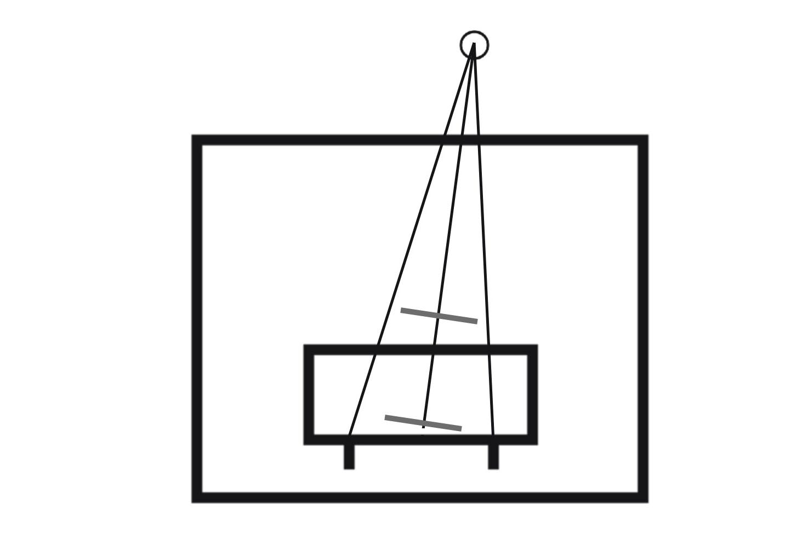
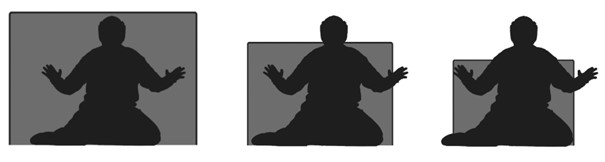
挑战对手——即向前朝着持球对手移动——是守门中的一个常见概念。很容易说守门员越靠近球，覆盖面积越大。然而，向前移动的棘手之处在于球在不断移动，可能迅速改变方向，因此离球门太远实际上可能适得其反，增加失球的概率。我们将这一悖论称为深度站位的递增误差。
守门员与球的距离相对于覆盖面积是一个指数函数，边际效用在相当快的时候就达到了。换句话说，当守门员与球的距离减小时，守门员的覆盖面积显著增加。但边际效用意味着在某个点（边际）之后，进一步向对手移动并不能增加太多覆盖面积。这意味着向球移动的相对优势降低，同时到新定位线的距离显著增加。
Challenging the opponent, meaning moving forward and towards the opponent with the ball is a common concept in goalkeeping. It is easy to state that the closer towards the ball the goalkeeper moves, the larger the coverage area is. What makes moving forward tricky, however, is the fact that the ball is constantly moving, and it might change direction rapidly, and therefore coming too far away from the goal might actually turn out counterproductive and increase the probability of a conceded goal. We call this paradox the increasing error of depth positioning.
3.5 比赛的坐标（The Coordinates of the Game）
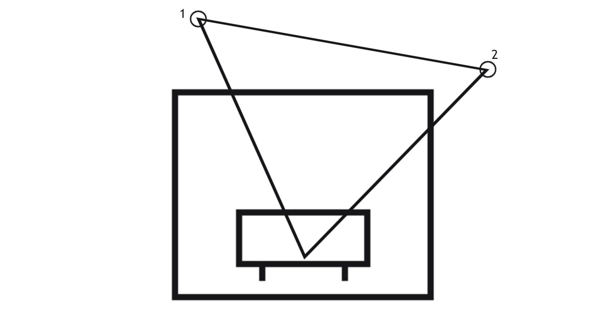
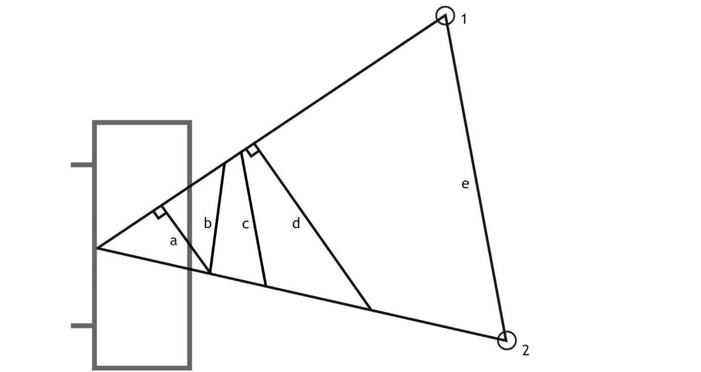
3.5.2 深度站位的递增误差（The Increasing Error of Depth Positioning）
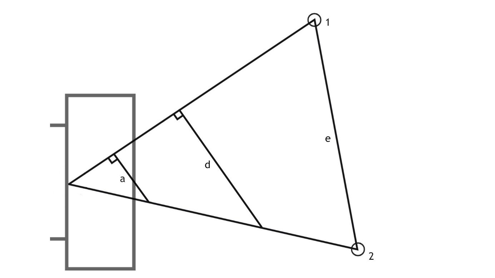
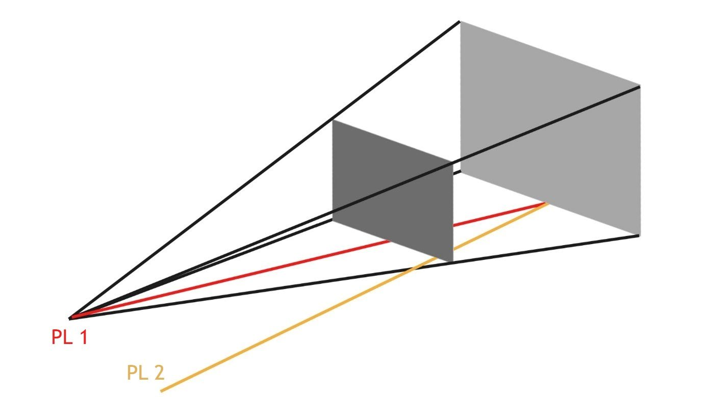
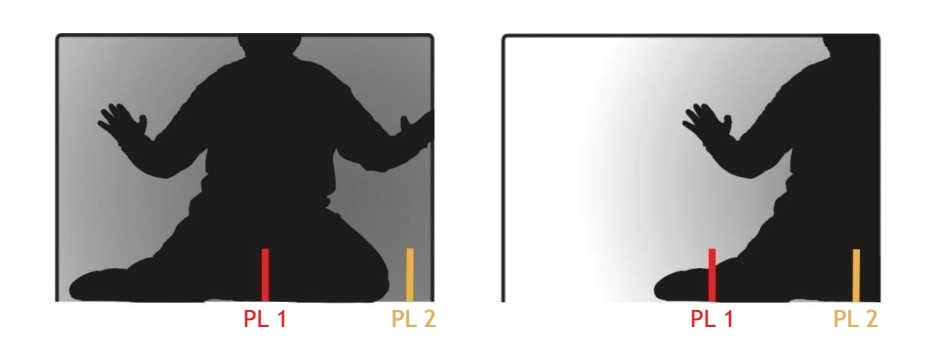
当守门员主动缩短与球的距离时，守门员与球门之间的距离增加。换句话说，当向球移动以增加覆盖面积时，守门员同时也在远离球门。与此同时，到下一个定位线的距离增加，这意味着到达下一条定位线所需的时间变长。距离增加得越多，守门员未能及时到达下一条定位线的概率越高。
When the distance between the goalkeeper and the ball decreases at the goalkeeper's initiative, the distance between the goalkeeper and the goal increases. In other words, when moving towards the ball to increase coverage area, the goalkeeper is at the same time moving further away from the goal. And at the same time, the distance to the next positioning line increases, which means that the time it takes to reach the next positioning line is getting longer.
3.5.3 寻找最优移动方向（Finding the Optimal Direction of Movement）
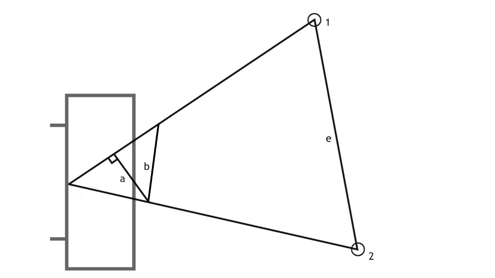
3.5.4 守门员移动距离的相对性（The Relativity of the Distances the Goalkeeper Moves）
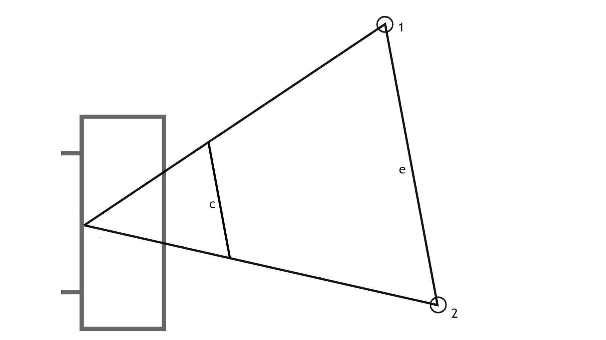
在距离方面，守门员的移动比场上球员少得多。这主要是由于守门员的角色，但从单个比赛事件的角度来看，也是由于三角几何的基本原理。球离球门越远且向侧方移动，守门员需要移动以保持在正确定位线上的距离就相对越少。因此，守门员应调整移动速度，始终保持在正确的定位线上。移动过快会导致守门员处于正确定位线的前方，在覆盖平面上守在某一角落，而不是理想地处于中央。
In terms of distance, the goalkeeper moves significantly less than a field player. This is primarily due to the role of the goalkeeper but from an individual game event point of view, also due to the fundamentals of the triangle geometry. The further away from the goal the ball moves sideways, the relatively less the goalkeeper needs to move to stay on the correct positioning line.
3.6 最佳可用技术（The Best Available Technique）
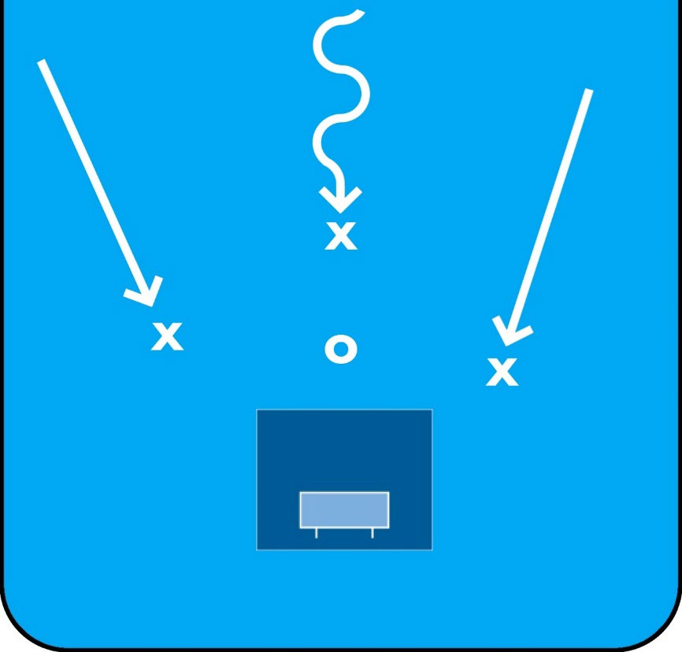
在软式曲棍球中，比赛是一个非常动态和复杂的环境，偶然因素始终存在。不同的因果关系不断改变着比赛。一些事件作为对其他事件的反应而发生，有些则完全是随机的。在比赛和训练中，通常可以为特定初始条件下的特定情境找到最佳可用操作模式。然而，由于比赛中相似动作和行动的初始条件或出发点可能差异很大，守门员应掌握多种不同的移动和扑救技术。
当定位线发生变化时——例如球传到了可以从那里射门的位置——守门员应向新的定位线移动。由于这项运动的快节奏，初始条件可能恰好在传球之前（即定位线变化之前）发生了变化。因此，守门员可能最终处于对当前情境不最优的站姿。然而，守门员应能够用经过练习和可控的操作模式来应对这种改变的情境，使扑救概率不受不利影响。这就是我们所说的最佳可用技术（BAT）的含义。
In floorball the game is a very dynamic and complex environment where the element of chance is always present. Different causalities keep constantly changing the game. Some of the events occur as reactions to others and some are just completely random. In playing and training, it is generally possible to identify the best available operating models for a certain situation with certain initial circumstances.
When the positioning line changes, e.g., if the ball is passed to a location where a shot on goal can be taken, the goalkeeper should move to such new positioning line. The goalkeeper should practise and master various operating models, which work well in the common variations of the typical game situation. To sum up, this is what we mean by the term best available technique (BAT).
第4章 守门基本功 The Fundamentals of Goalkeeping
4.1 站姿（The Stance）
4.1.1 守门员站姿简介（Introduction to the Goalkeeper Stances）
比较软式曲棍球和冰球的守门时，可以发现两个对软式曲棍球守门员构成更多挑战的重要因素：
- 比赛速度：虽然冰球运动员在冰上滑行比软式曲棍球运动员在场地上跑动更快，但球的移动和方向变化比冰球快得多且更不可预测。
- 力产生：在软式曲棍球中，守门员站姿不会自动创建能量势——即"充电能量"——这是向侧方传球移动所需的，而在冰球中守门员始终将冰鞋放在冰面上，随时准备向侧方推动自己。
这两个因素共同导致了一个结论：在软式曲棍球守门中不存在所谓的基本站姿，守门员不应在情境之间、移动或扑救之后采取某种特定的站姿。在软式曲棍球中，守门员站姿可以分为准备站姿和扑救站姿。
When comparing goalkeeping in floorball and ice hockey, two important factors can be found that pose more challenges to floorball goalkeepers:
- Game speed: Although ice hockey players skate faster on ice than floorball players run on the field, the ball moves and changes direction much faster and in a more unpredictable way than the puck.
- Force production: In floorball, the goalkeeper stance does not automatically create energy potential, i.e., charged energy, which is needed to move sideways towards a pass, whereas in ice hockey the goalkeeper has the skates on the ice at all times ready to push themselves into a movement sideways.
These two factors together lead to a conclusion that there is no such thing as a basic stance in floorball goalkeeping. In floorball the goalkeeper stances can instead be divided into the readiness stance and the save stance.
4.1.2 准备站姿的基本要素（The Basics of the Readiness Stance）
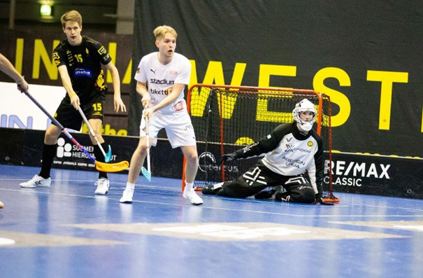
准备站姿完全由情境决定，意味着合适的准备站姿因情境而异。在准备站姿中，守门员的身体姿势通常比扑救站姿更低，因为较低的姿势能够为移动产生更有效的力。就像短跑运动员在起跑时采取低蹲姿势一样，在软式曲棍球中，守门员采取低姿势的准备站姿以确保起步时（即开始移动时）的最优力产生。
The readiness stance is completely situation specific, meaning that the appropriate readiness stance varies from situation to situation. In the readiness stance the goalkeeper's posture is usually lower than in the save stance as a lower posture enables a more efficient force production for movement. Like in the starting position in sprinting, where the sprinter assumes a low crouching position, similarly in floorball the goalkeeper assumes a readiness stance, which is low to ensure optimal force production in take-offs.
4.1.3 扑救站姿的基本要素（The Basics of the Save Stance）
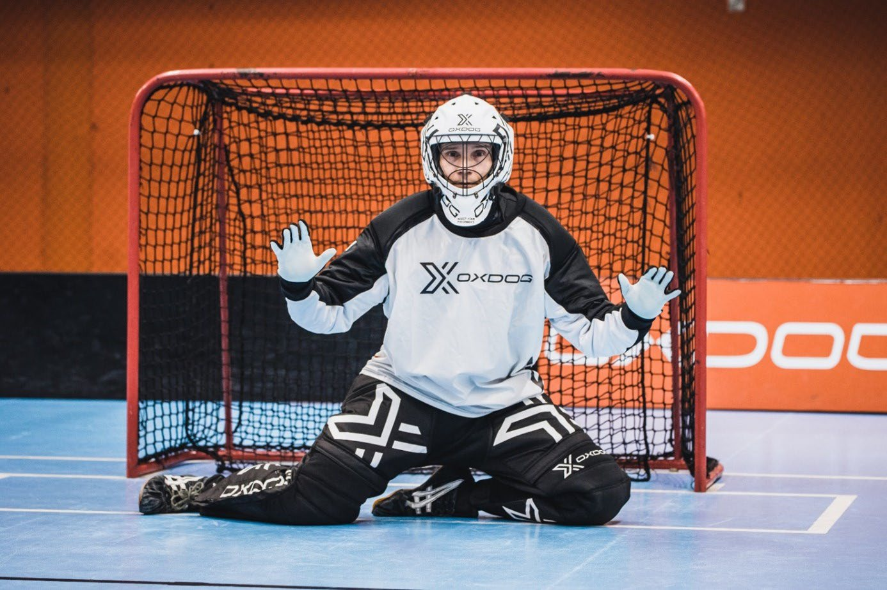
与准备站姿一样，合适的扑救站姿也完全取决于情境。在扑救站姿中（见 Image 26），守门员的姿势自然比准备站姿更直立，因为这种姿势能够增加覆盖面积。然而，守门员几乎从不将身体完全直立，臀部完全伸展，因为在这种姿势下平衡和身体控制不是最优的。即使在扑救站姿中，臀部也应保持屈曲。在扑救站姿中，双腿通常比准备站姿稍微分开得更宽，以获得更大的覆盖面积。
Like the readiness stance, an appropriate save stance also depends entirely on the situation. In the save stance (see Image 26) the goalkeeper's posture is naturally more upright than in the readiness stance as such posture increases the coverage area. Yet the goalkeeper hardly ever straightens the posture completely upright with the hip in full extension, as in such posture the balance and body control are not optimal. The hip should instead remain flexed also in the save stance.
4.1.4 老派基本站姿批判（The Old School Basic Stance）
在过去，软式曲棍球守门员的基本站姿被认为是：守门员双膝着地，双腿放在身后，双脚并拢，双手举起准备扑救。这种所谓的老派基本站姿乍看可能显得对称和稳定，但实际上恰恰相反。
老派站姿的五大问题：
- 平衡：双腿放在身后、双脚并拢的站姿明显不如一条腿在身体下方、另一条腿向侧方伸展的站姿稳定。
- 力产生与延迟：老派基本站姿不允许向任何方向快速移动。实际上从这一站姿发起的任何移动都必须使用推技术或拉技术，而在这两种技术中，产生移动力的腿必须在移动前抬起（加载），这在起步时造成重大延迟。
- 手支撑缺失：在现代软式曲棍球中，前门柱侧手支撑通常提供了无延迟力产生的手段。老派基本站姿不允许守门员采取足够低且稳定的姿势，以将一只手适当地放在地板上支撑并产生侧向移动力。
- 覆盖面积较小：由于守门员双腿放在身后、双脚并拢，与一条腿向侧方伸展的站姿相比，地面存在更大的空隙。
- 手的无效使用：在整个比赛过程中，守门员应该举双手准备扑救的时刻累计起来大约只占比赛时间的百分之一。那么为什么要让手在其他99%的时间里举着呢？
基于以上论据，老派基本站姿在现代软式曲棍球守门中没有相关性，没有作用，因此不应再被训练或应用。
Back in the days, the basic stance of a floorball goalkeeper was considered to be a stance where the goalkeeper is on their knees, legs behind the back and feet together and hands up ready to make a save. This so-called old school basic stance might appear as symmetrical and stable at first glance, but in practice, it is everything but.
Five problems with the old school basic stance:
- Balance: A stance where the legs are behind the back and feet together is clearly less stable than a stance where one leg is under the goalkeeper and the other one is extended to the side.
- Force production and delay: The old school basic stance does not allow fast movement in any direction.
- Missing hand support: The hand support by the front post side hand is usually providing the means for force production without delay.
- Smaller coverage area: As the goalkeeper is having both legs turned behind the back with the feet together, there is a larger empty space on the floor level.
- Inefficient use of hands: Hands held up ready to save a shot for only ~1% of game time.
Due to the arguments listed above, the old school basic stance is not relevant and has no role in modern floorball goalkeeping, and hence it should no longer be trained or applied.
4.2 比赛角度的因果关系（The Causalities of the Game Angles）
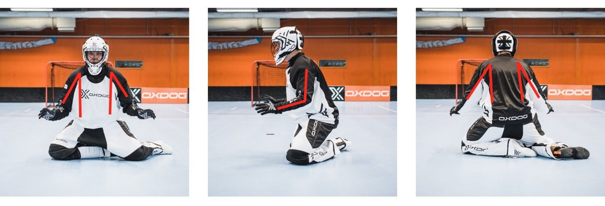
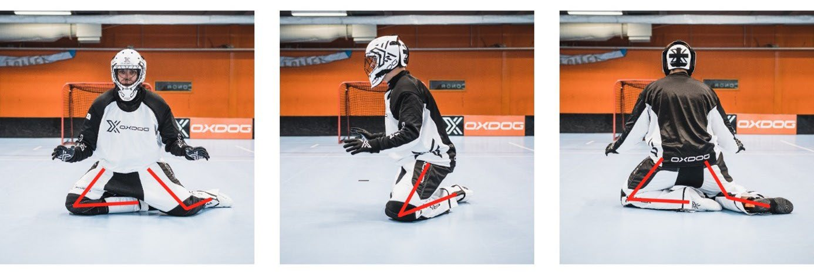
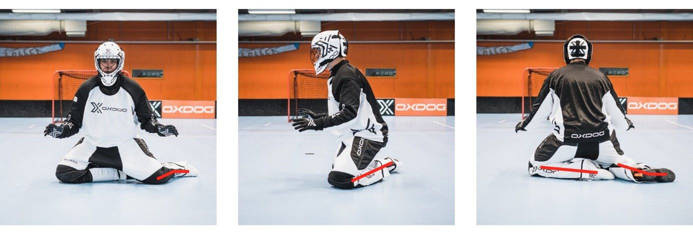
在软式曲棍球守门中没有特定的基本站姿，守门员的正确站姿完全取决于比赛中的当前情境。站姿反映了不断变化的比赛和守门员预期发生的事件。我们将守门员站姿分为准备站姿和扑救站姿，两者都由情境决定。每个站姿由守门员关节的角度设定，这些角度影响平衡、覆盖面积和移动准备。在此语境中，这些关节的角度（即脚踝、膝盖、髋部和手的位置）被称为比赛角度。
守门员的肩膀应保持放松，以便尽可能高效地使用手、手臂和上半身。手的方向和位置完全取决于情境，随着比赛的进展而调整。在扑救站姿中，手臂应保持离开躯干，以便在腋下区域和身体线条之外保持尽可能高的手部扑救概率。在实践中，这意味着覆盖平面上尽可能大的黑色区域和尽可能大的深灰色区域。
在准备站姿中，手的主要目的是帮助保持平衡并实现无延迟的高效移动。手支撑在控制能量势方面发挥关键作用。脚踝应最大限度伸展，这样脚处于相对于身体的自然位置，使守门员能够尽可能流畅地移动双腿。
There is no specific basic stance in floorball goalkeeping, but the proper stance of the goalkeeper depends entirely on the current situation in the game. The stance mirrors the constantly changing game and the events the goalkeeper is expecting to occur. We divide the goalkeeper stances into the readiness stance and save stance, both of which are situation specific. Each stance is set up by the angles of the goalkeeper's joints, which affect the balance, the coverage area and the readiness to move. In this context, the angles of these joints (i.e., the position of the ankles, knees, hip and hands) are called the game angles.
The goalkeeper's shoulders should be relaxed so that the hands, arms and upper body can be used as efficiently as possible. The direction and the position of the hands depend entirely on the situation. In the readiness stance, the primary purpose of the hands is to help with the balance and to enable the efficient movement without delay.
4.3 支撑点方法（The Support Point Method）
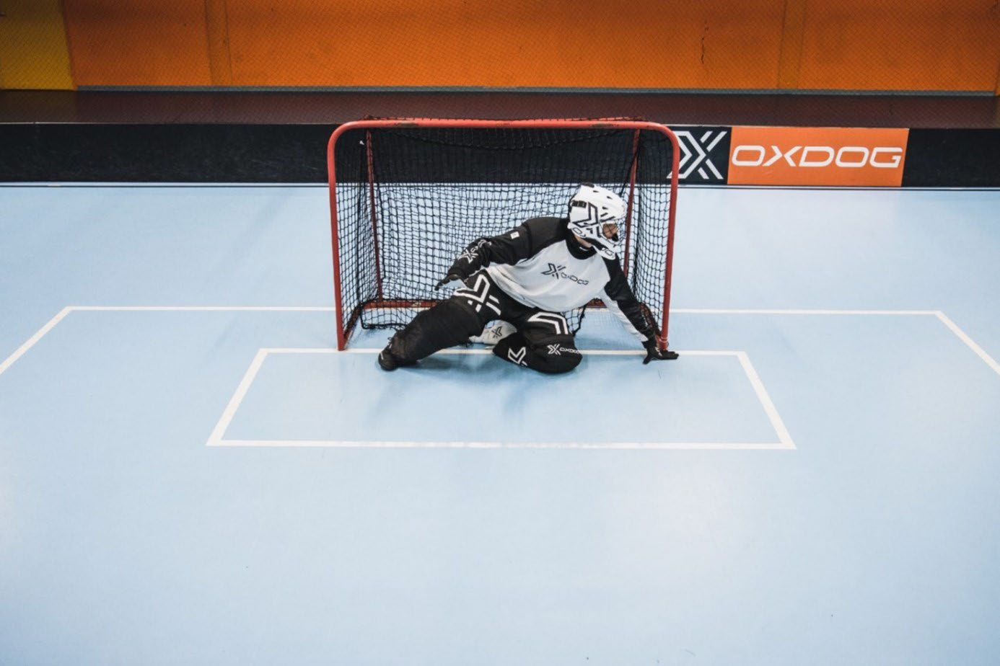
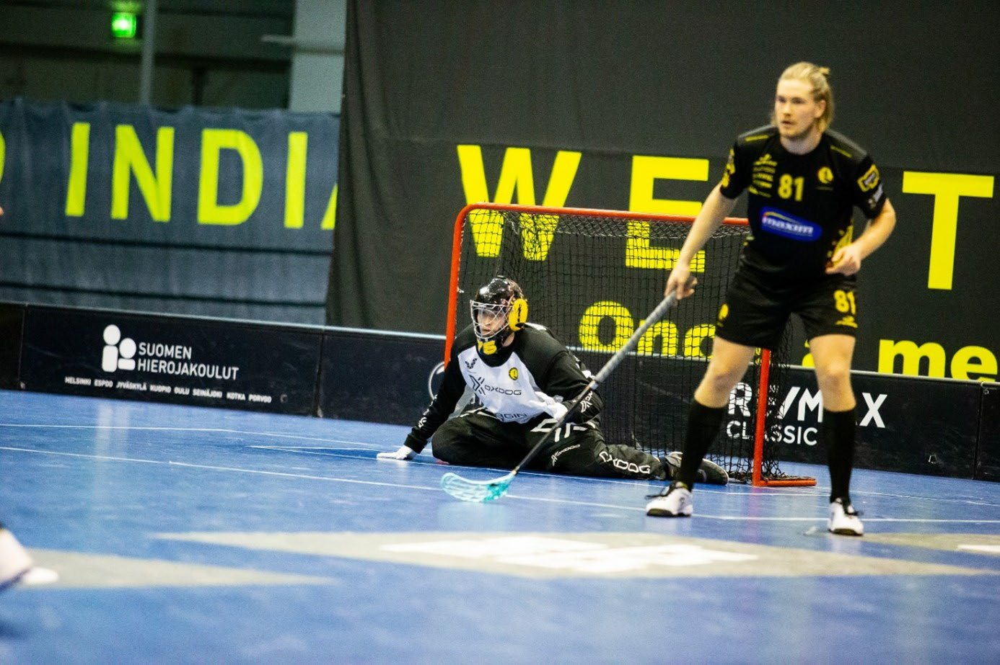
支撑点方法可以被视为软式曲棍球守门演变中最重要的发展步骤之一。与冰球相比，这相当于冰球守门员从直立站姿过渡到蝶式风格的同样重要的一步。与冰球不同的是，在软式曲棍球中没有基本站姿。在软式曲棍球中，守门员站姿分为准备站姿和扑救站姿，守门员在比赛中不断在两者之间切换。
在软式曲棍球守门中，支撑点方法指的是一种打法，其中前门柱侧手的位置被主动调整，最重要的是，手保持在地板上。当在正确的时间利用地板上的支撑手时，这给守门员带来了巨大优势。顾名思义，支撑点方法为守门员提供了身体线条之外的一个额外支撑点，这在守门员需要主动寻找球时特别有助于观察比赛。
手支撑的核心优势：前门柱侧手在地板上帮助将守门员推入侧向移动，同时双腿强力参与移动。通过适当前倾于前门柱侧手，守门员可以在身体中创建能量势——这意味着守门员"充电能量"，可以相对快速地将之转换为向侧方移动的动能。没有前门柱侧手的帮助，守门员将只剩下推和拉作为唯一可用的移动技术，而这两种技术都会在移动中产生显著的延迟。
The support point method can be regarded as one of the most significant development steps in the evolution of floorball goalkeeping. Compared to ice hockey, it is an equally remarkable step as when the ice hockey goalkeepers transitioned from the upright stance to the butterfly style. Unlike in ice hockey, in floorball there is no such thing as a basic stance. In floorball, the goalkeeper stances can be divided into the readiness stance and the save stance, and the goalkeeper keeps switching between these two during the game.
In floorball goalkeeping, the support point method refers to a way of playing where the position of the front post hand is actively adjusted and most importantly, the hand is kept on the floor. When the supporting hand on the floor is utilised at the right time, this gives the goalkeeper a major advantage. As the name suggests, the support point method gives the goalkeeper one extra point of support outside the body line.
Core advantage of hand support: The front post side hand on the floor helps to push the goalkeeper into a movement sideways without delay with the legs strongly contributing to the movement. By leaning on the front post side hand to an appropriate degree, the goalkeeper can create an energy potential in the body. This means that the goalkeeper "charges energy" which can relatively quickly be converted into kinetic energy for movement sideways.
4.4 移动技术（The Movement Techniques）
4.4.1 移动技术概述（The Movement Techniques in Brief）
守门员能够移动的方式以及移动的容易程度在很大程度上取决于膝盖和髋部的角度。一般来说，角度越小，移动越容易。因此，在较低的姿势下移动更容易。然而，当角度较大——即更直立的姿势时——覆盖球门更容易。在比赛中，守门员不断阅读比赛并解读事件以预判接下来会发生什么。在射门威胁较低的比赛情境中，守门员可以以较低的姿势和更靠近球门的位置进行比赛，这样移动比在更直立的姿势下容易得多。
The ways the goalkeeper can move and how easy the movement is are largely dependent on the angles of the goalkeeper's knees and hip. In general, the smaller the angles, the easier the movement. Thus, it is easier to move in a lower posture. Covering the goal, however, is easier when the angles are wider, meaning a more upright posture.
4.4.2 全能的膝步技术颂（The Ode to the Omnipotent Knee Step）
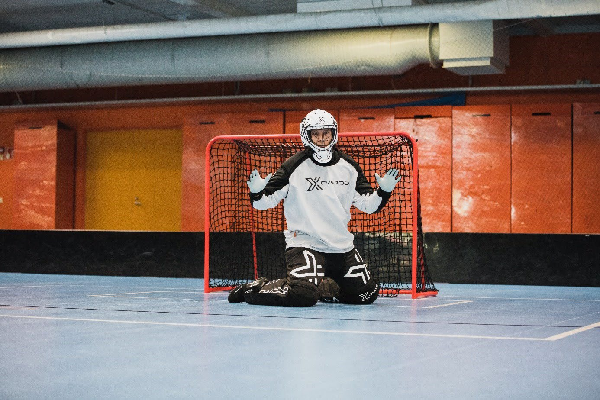
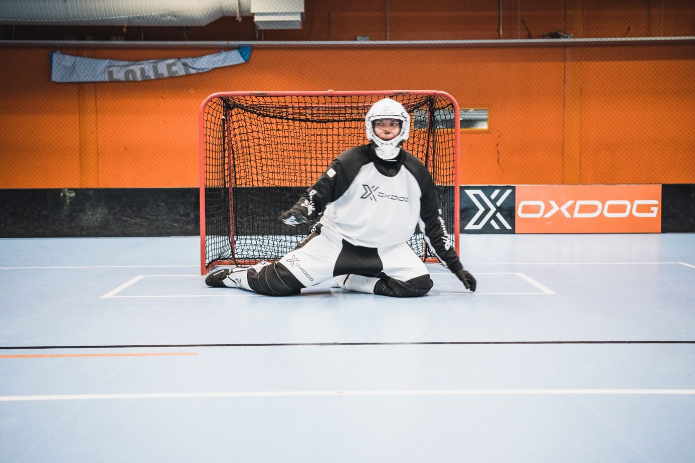
膝步使守门员能够在所有情境中、在任何时候都以最优站姿进行比赛。通过将重心从身体一侧转移到另一侧以及强有力的腿部和核心运动，守门员可以通过滑动移动，从而始终保持行动准备状态。前门柱侧手可以用作强有力的支撑点，帮助引导移动朝正确方向发展。膝步可以看作是用膝盖在地板上行走或跨步，同时贴地的胫骨通过分散重量和提供额外支撑点来辅助移动。
膝步是一种非常快的技术，无论是侧向移动还是向前离开球门向球移动——前提是守门员最初位于守门员区域内，符合现代软式曲棍球守门的要求。作为一种移动技术，膝步考虑到了在比赛情境中很难精确确定球何时何地移动的事实。守门员在膝步过程中的姿势使其能够在移动的各个阶段都保持高水平的扑救表现。因此，膝步无疑应是最常应用的移动技术。膝步的多功能性和持续准备状态（见 Image 34）——随时准备扑救和移动——得出的结论是：膝步无疑应该是软式曲棍球守门员的主要打法。
The knee step enables the goalkeeper to play in a stance which is optimal in all situations and at all times. By shifting weight from one side of the body to another and strong leg and mid body movements the goalkeeper can move by sliding, whereby the goalkeeper maintains the readiness to act at all times. The front post side hand can be used as a strong support point that helps to guide the movement in the right direction. The knee step can be seen as walking or striding with knees on the floor, while the shins on the floor support the movement by distributing the weight and providing additional support points.
The knee step is a very fast technique to move both sideways and away from the goal towards the ball. The posture which the goalkeeper has during the knee step enables maintaining a high level of performance in saving a shot in all stages of the movement. Therefore, it should undoubtedly be the most frequently applied movement technique. The versatility of the knee step and the constant readiness to save shots and to move lead to the conclusion that the knee step should undeniably be the floorball goalkeeper's primary way of playing.
4.4.3 永远可靠的推技术（The Ever-Reliable Push Technique）
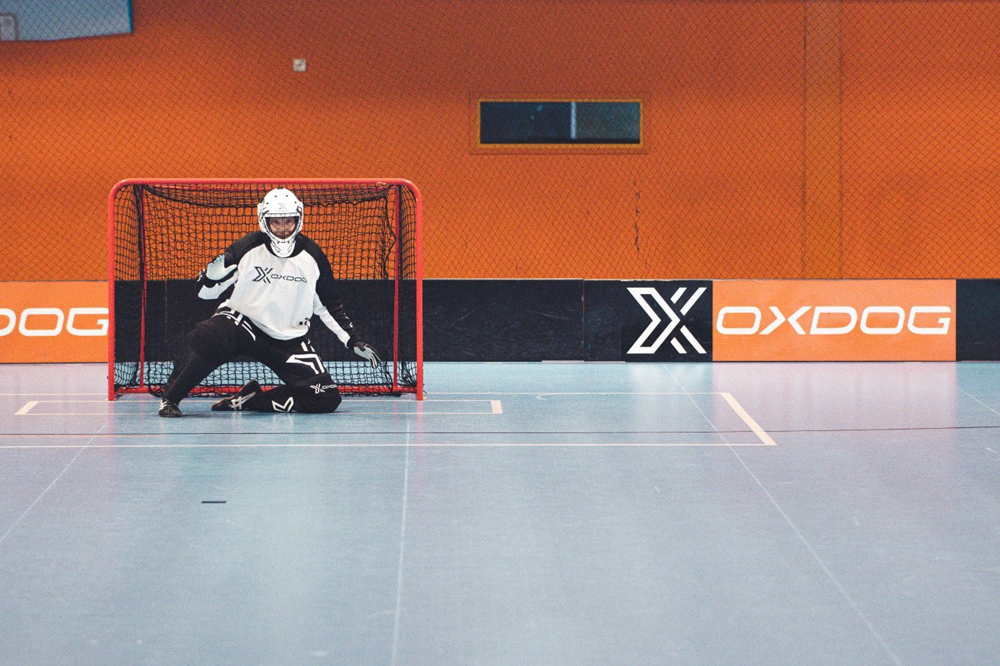
需要抬膝的移动技术数十年来一直是软式曲棍球守门和守门员教练的核心。这些技术源自软式曲棍球在低摩擦硬木地板上比赛、比赛速度明显较慢的时代。在这种条件下，守门员需要通过鞋底获得抓地力，而且有更多的时间来移动。
推是一种移动技术，其中来球方向的腿将身体推向侧方或斜向。在横穿场地的传球中，使用推技术需要大量时间，因为"不正确"的腿部位置需要切换——即内侧腿（守门员下方的腿）必须先向侧方伸展并抬膝，然后才能起步。总的来说，推是在手从地板上举起准备扑救的情况下的合适且有用的移动技术。
Movement techniques that require lifting the knee have been at the heart of floorball goalkeeping and goalkeeper coaching for decades. These techniques derive from the era when floorball was played on a low-friction hardwood floors and the speed of the game was remarkably lower. Under such conditions, the goalkeeper needed to obtain grip by the soles of the shoes and there was much more time to move.
The push is a movement technique where the leg of the incoming direction pushes the body into movement sideways or diagonally. In a pass crossing the field sideways, using the push technique takes a lot of time as the "incorrect" positioning of legs needs to be switched. In general, the push is an appropriate and useful movement technique in situations when hands are held up from the floor ready to save a shot.
4.4.4 淘汰拉技术（Pulling the Plug on the Pull Technique）
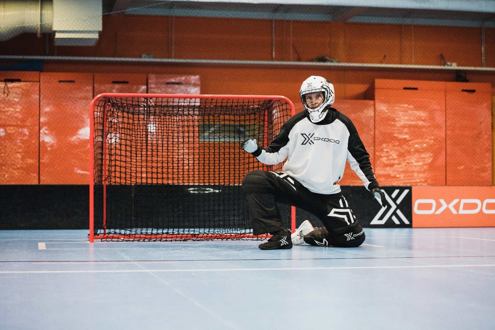
由于比赛的快速度，软式曲棍球守门员不可能完美地阅读比赛。需要抬膝的移动技术有一个重大弱点，即当膝盖从地板上抬起以产生移动力时，站姿的覆盖和平衡在那一瞬间较差。抬膝技术的另一个重大挑战是起步时的延迟，这是由抬腿引起的。这种延迟经常在比赛精彩集锦视频中可见——守门员明显来不及应对局面。
拉技术和用移动方向腿推的鱼跃都是守门员在实践中没有时间成功执行的移动技术。如果用移动方向腿推来侧向移动，守门员的重心会自动偏离下一条定位线，导致守门员部分位于球门前方之外。此外，拉技术移动缓慢，对身体消耗大。一旦守门员做出拉的动作，在某一点之后就不再可能停止移动，唯一的选择是将其完成到底。
作为一种移动技术，拉相对容易学习和执行，这就是为什么年轻和初学者守门员经常使用这种技术。然而，仅仅因为它容易，不应成为使用这种技术或将其教授给守门员的理由。拉技术与其他可用的移动技术相比没有任何优势。拉是历史的一部分，在现代软式曲棍球中没有位置。你几乎看不到当今顶级守门员使用拉技术。
Due to the fast speed of the game, it is impossible for the floorball goalkeeper to read the game perfectly. The movement techniques that require lifting the knee entail a major weakness, which is the poor coverage and balance in the stance for a moment when the knee is lifted from the floor to produce force for movement. Another major challenge in the knee lift techniques is the delay in take-offs, which is caused by lifting of the leg.
Both the pull technique and the dive by pushing with the leg of the heading direction are such movement techniques which the goalkeeper in practise does not have time to perform successfully in a game. In addition to the fact that it is a slow way to move, the pull technique is also a physically heavy way to move. Once the goalkeeper makes a pull, after a certain point it is no longer possible to stop the movement.
The pull technique does not offer any advantages compared to other available movement techniques. The pull is a part of history and has no place in modern floorball. You hardly ever see the top goalkeepers of today use the pull technique.
4.5 手部扑救（The Hand Saves）
第5.2节中呈现的3D分析工具可用于说明单个比赛情境和守门总体中的因果关系。然而，有一个重要因素是该分析工具无法提供洞察的：即手部扑救的质量。最终，尤其是在顶级水平上，守门员用手击球的能力是高质量成功守门的关键因素。各个守门员在手眼协调能力和反应速度方面存在显著差异。
练习和提高手眼协调能力是一个贯穿软式曲棍球守门员整个职业生涯的项目。由于比赛的速度，手部扑救处于守门员身体能力的极限。人类的反应时间不够短，移动速度不够快，无法有目的地在所谓的高百分比得分区扑救射门。守门员可以通过阅读对手的身体语言以及球杆和拍头的位置来获得一些帮助。
在训练中，守门员通常练习双手接球、单手接球，甚至在做手部扑救时将球导向角落。这些都是很好的技能，但这些技能与顶级软式曲棍球之间几乎没有任何类比关系。在顶级软式曲棍球中，守门员能够设法让手出现在球前面就已经可以感到满意了。在顶级水平上，守门员熟练的覆盖打法——即始终位于球和球门之间——远比成功完成手部扑救更为重要。
The 3D analytics tool presented in Chapter 5.2 can be utilised for illustrating cause-and-effect relationships both in individual game situations and in goalkeeping on a general level. However, there is one important factor which the analytics tool cannot provide insight into: namely the quality of hand saves. Ultimately, and especially on the top level, the goalkeeper's ability to hit the ball with their hands is an essential factor in successful goalkeeping of high-quality.
Practising and improving the hand-eye coordination is a project that lasts for the entire playing career of a floorball goalkeeper. Due to the speed of the game, hand saves are at the limit of the goalkeeper's physical abilities. The human reaction time is not short enough and the movement speed not high enough to purposefully save a shot in the so-called high percentage scoring zone.
In training sessions, goalkeepers have typically been practicing two hand catches, one hand catches and even directing the ball to the corner when making a hand save. All of these are nice skills to have, but there is hardly any analogy between these skills and top-level floorball. On the top level, skilled coverage play by the goalkeeper – i.e., being positioned between the ball and the goal at all times – is far more important than succeeding in hand saves.
4.6 站姿序列（The Series of Stances）
下文以一系列图片展示守门员在单个比赛情境不同阶段中站姿的变化。每张图片旁附有说明，描述守门员如何持续阅读比赛——即基于情境中的比赛变量，预期接下来会发生什么以及需要考虑什么。
On the next pages, you will find a series of images illustrating how the goalkeeper's stance changes in different stages of an individual game situation. Next to each image, there is a description on how the goalkeeper keeps reading the game, i.e., what is expected to happen next and what needs to be taken into account, based on the game variables in the situation.
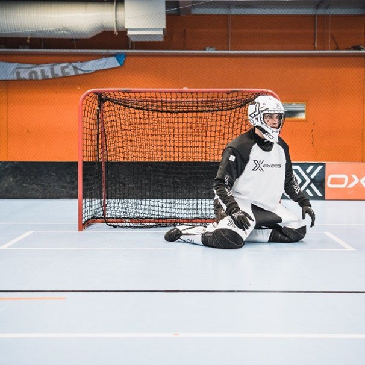
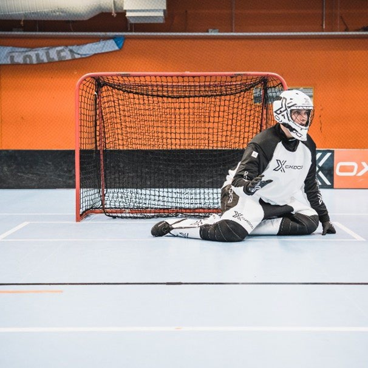
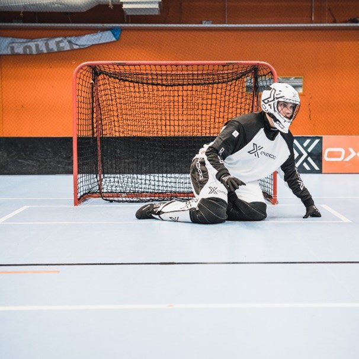
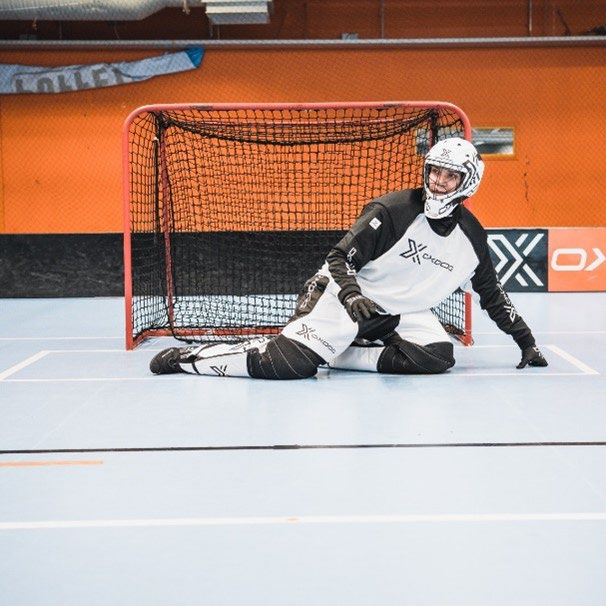
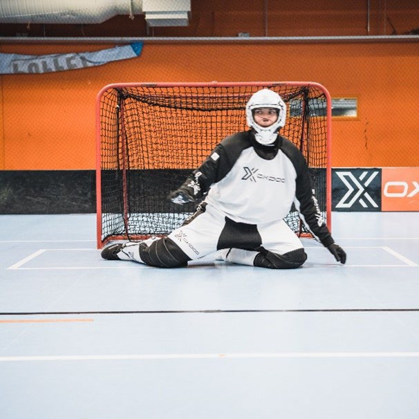
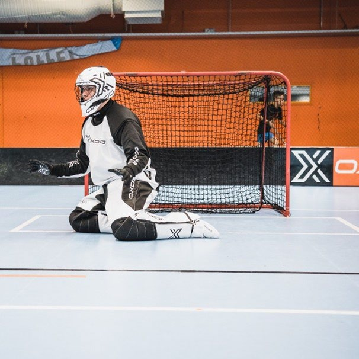
第5章 分析系统 The Analytics
5.1 系统性打法（The Systematic Playing）
从软式曲棍球守门员的角度来看，这项运动的难度在于球的移动速度与守门员膝盖着地移动的能力相比非常快。这导致如果守门员没有提前正确阅读情境，就很容易迟到。比赛的速度要求守门员做出自动化决策，而提前识别情境在成功守门中起着重要作用。
守门可以用数学进行分析。在每个比赛情境中，守门员都有100%的可用能力，可以在不同情景之间分配。情景指的是单个情境的不同可能结果，这些结果受场上球员不同决策和选择的影响。在分享100%的总能力时，最关键的方面是所做决策应在长期有效。这意味着每个比赛情境都应事先规划并练习。任何事都不应仅依赖偶然——尽管偶然因素在软式曲棍球中确实不可避免地发挥一定作用。
From the floorball goalkeeper's perspective, the difficulty of the sport lies in the fact that the ball moves very fast compared to the goalkeeper's ability to move with knees on the floor. This results in the goalkeeper being easily late for the game situations if the goalkeeper has not managed to read the situation correctly in advance. The speed of the game requires the goalkeeper to make automated decisions, and recognising the situation beforehand plays an important role in successful goalkeeping.
Goalkeeping can be analysed by using mathematics. In each game situation, the goalkeeper has an available capacity of 100 per cent which can be shared between different scenarios. The most essential aspect in sharing the 100% total capacity between different scenarios is that the decisions made should work in the long term.
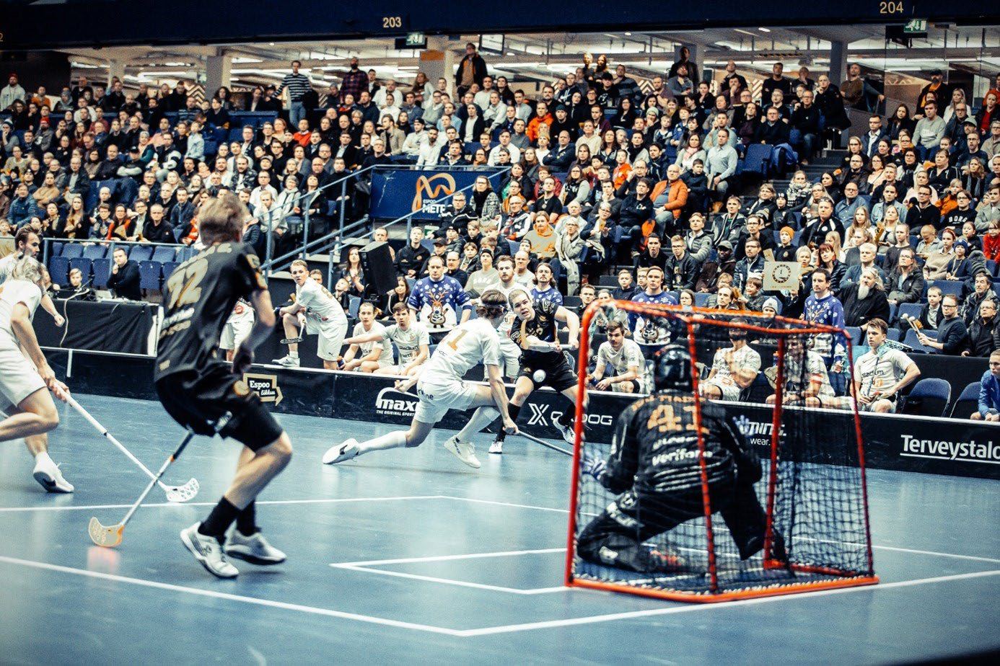
5.2 3D分析工具（4x4x4）（The 3D Analytics Tool）
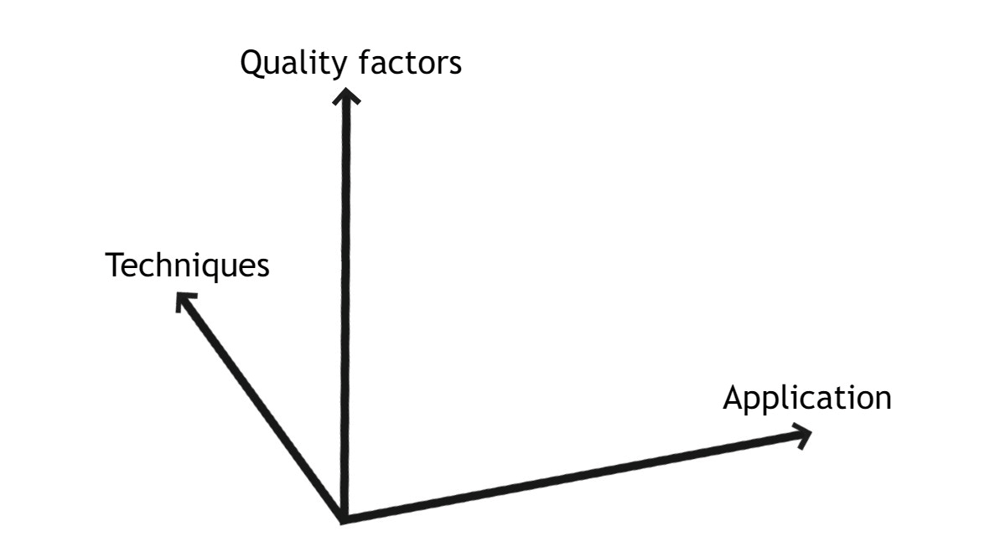
3D分析工具框架（4×4×4）
| 第一维度 | 4 种技术：膝步 / 手支撑膝步 / 推技术 / 拉技术 |
| 第二维度 | 4 个质量因素：深度站位 / 准备站姿 / 胸部朝向 / 膝线 |
| 第三维度 | 4 项应用：合作 / 预判 / 勇气 / 心理 |
3D分析工具的目的是为守门员和守门员教练提供一个具体的工具，用于分析守门员的训练、比赛和行动。分析工具由一个三维模型组成，提供了分析单个情境和理解大局的综合方法。第一维度是技术，因为技术对守门员在职业生涯早期就已经非常相关。第二维度是守门质量因素。第三维度是应用——掌握这一维度使守门员在与技术和战术水平相当的对手竞争时获得竞争优势。
The purpose of the 3D analytics tool is to give goalkeepers and goalkeeper coaches a concrete tool for analysing training, playing and actions of a goalkeeper. The analytics tool consists of a three-dimensional model, providing a comprehensive method for analysing both individual situations and understanding the big picture. The first dimension is the techniques. The second dimension is the quality factors of goalkeeping. The third dimension is called the application.
5.3 守门质量因素（The Quality Factors of Goalkeeping）
1. 深度站位（Depth Positioning）
- 初始情境中适当深度站位，明确位于守门员区域内
- 适时向球移动
- 适当深度不等于被动打法
- 离球门太远会增加到下一条定位线的距离
2. 准备站姿（Readiness Stance）
- 稳定且适当的站姿使在不同情景中都能成功
- 射门 vs 传球，即扑救 vs 移动
- 基于其他球员威胁的概率和准备状态
- 无延迟移动
- 身体中充电能量（能量势）
3. 胸部朝向（Chest Direction）
- 如果情境允许，胸部指向中央（最具威胁的球员）
- 主要注意力应保持在球上
- 优化胸部朝向以避免横传时的身体旋转
4. 膝线（Knee Line）
- 更接近平行于球门线的线（如果情境允许）
- 目标是避免远门柱侧膝盖的旋转
- 优化膝线是促进侧向移动的最简单方式
5.3.2 深度站位（The Depth Positioning）
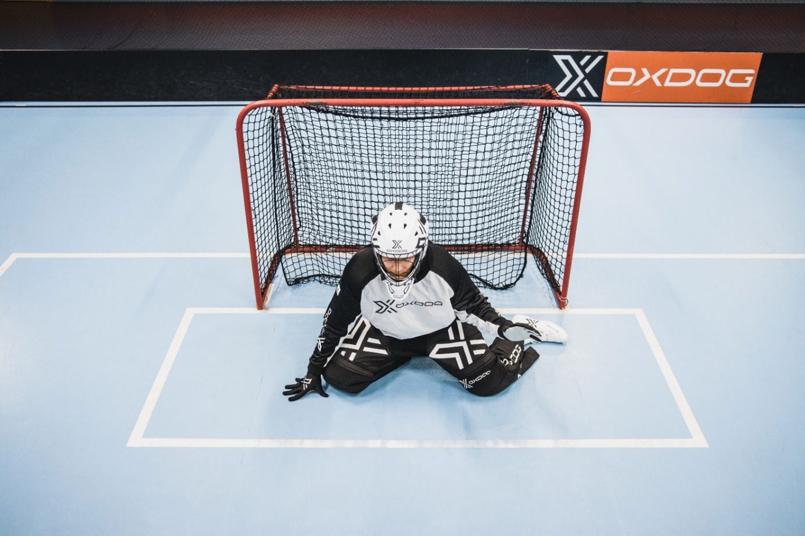
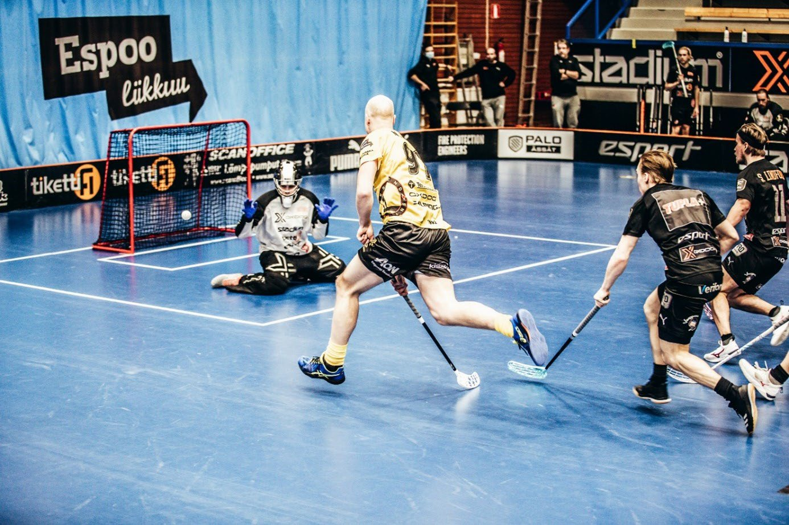
多年来，软式曲棍球守门员的深度站位发生了显著变化。随着比赛变得越来越快，守门员需要通过更适度的深度站位来适应。守门员教练的发展也促成了适度深度站位的采用。由于比赛的快节奏性质，如果守门员最初站位离球门外太远，在横传后的射门中往往来不及移动到正确的定位线上。
初始时的适度深度站位并不意味着守门员在被动比赛。守门员应根据当前情况持续调整深度。守门员在深度站位方面应该瞄准的一个检查点是：在射门时膝盖位于守门员区域的前线。深度站位的主要目的是增加守门员在球门框内形成的覆盖面积。然而，一般情况下，如果球靠近中线且由对方防守队员控球，守门员不需要增加覆盖面积——因为守门员可以相当合理地依赖能够用手完成扑救。
The depth positioning of the floorball goalkeeper has changed significantly over the years. As the game has become faster, the goalkeeper has needed to adapt by a more moderate depth positioning. The development of goalkeeping coaching has also contributed to the moderate depth positioning. Due to the fast-paced nature of the game the goalkeeper is often late to move to the positioning line of a shot following a cross field pass if the goalkeeper is initially positioned too far outside the goal.
Moderate depth positioning in the beginning does not, however, mean that the goalkeeper would be playing passively. The goalkeeper should keep adjusting the depth according to the prevailing situation. The primary purpose of the depth positioning and moving towards the ball is to increase the coverage area.
5.3.3 准备站姿（The Readiness Stance）
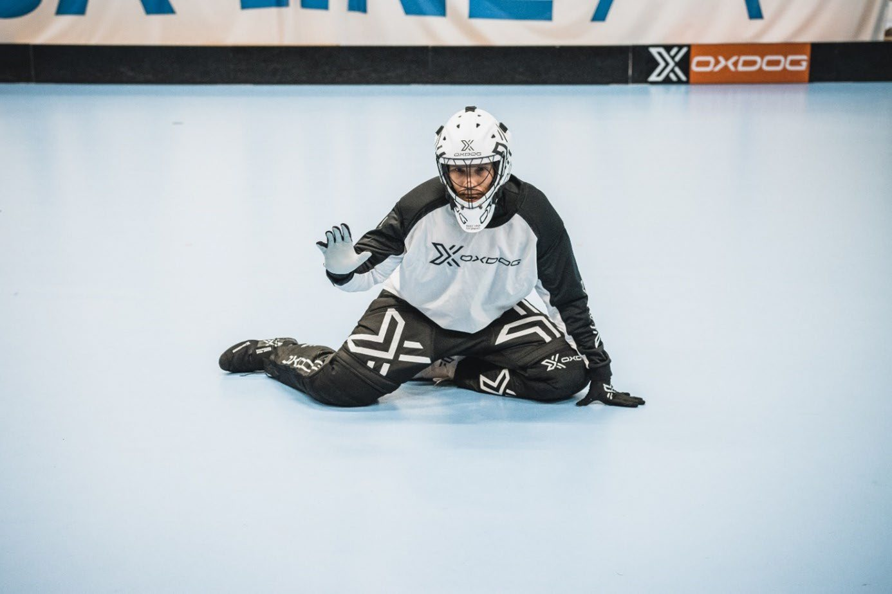
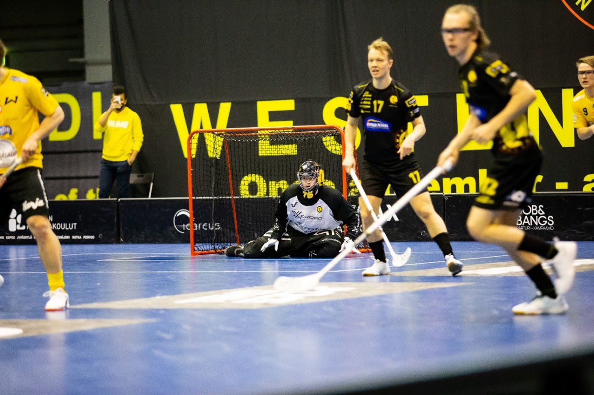
在软式曲棍球守门中没有基本站姿可以产生能够转化为运动动能的可观能量势。软式曲棍球守门员相对较小的装备（与冰球守门员的大护具相比）以及场地表面的高摩擦力，迫使软式曲棍球守门员用膝盖移动。由于比赛的高速度和前面讨论的守门挑战，守门员应专注于为运动创造能量势。软式曲棍球守门员尤其应利用实际扑救之前的时间，这强调了准备站姿的重要性。
守门员的准备站姿因情境而异，但其主要目的是实现无延迟的力产生、向下一条定位线移动，并最终过渡到扑救站姿。通常准备站姿指的是相对较低的姿势，其中一条腿向侧方伸展，守门员前倾于前门柱侧手，也称为手支撑。
In floorball goalkeeping there is no basic stance which would enable any good ways of creating energy potential that could be turned into kinetic energy for motion. The rather small gear of the floorball goalkeeper compared to the ice hockey goalkeeper's big pads and equipment and the high friction of the field surface force the floorball goalkeeper to move on their knees. Due to the high speed of the game and the previously discussed challenges of goalkeeping, the goalkeeper should focus on creating an energy potential for motion.
The goalkeeper's readiness stance varies from situation to situation, but its primary purpose is to enable force production without delay, movement to the next positioning line and finally transition to the save stance. Often the readiness stance refers to a relatively low stance, in which one of the legs is extended to the side and the goalkeeper leans on the front post side hand, also known as the hand support.
5.3.4 胸部朝向（The Chest Direction）
与其他质量因素一样，守门员也需要在优化胸部朝向——即守门员胸部所指的方向——中找到平衡。因为在软式曲棍球中守门员通常不能只防持球球员，守门员也不应将胸部朝向完全转向持球球员。守门员的目标是尝试解读持球球员是否以及何时构成射门威胁。
一个很好的例子是当球在球门后方或角落时，守门员不应将胸部转向球。守门员应保持胸部朝向场地中央——那里通常是最危险的对手所在。优化胸部朝向的最显著优势体现在向横传移动时。如果守门员将胸部朝向角落点的对手，要移动去迎接可能横穿对称轴的斜传就变得非常困难。在快节奏的运动中，如果守门员的胸部最初指向另一个方向120度，守门员无法转动躯干并移动到横传后射门的定位线上。
Like the other quality factors, the goalkeeper also needs to find the balance in optimising the chest direction, meaning the direction which the goalkeeper's chest is pointing at. As in floorball the goalkeeper often cannot play against the player with the ball only, the goalkeeper should also not turn the chest direction fully towards the player with the ball. The aim of the goalkeeper is to try to interpret whether and when the player with the ball poses a threat of a shot or not.
A good example of a situation when the goalkeeper should not turn the chest towards the ball is when the ball is behind the goal or in the corner. The goalkeeper should, instead, keep the chest facing the centre of the field which is where the most dangerous opponents usually are.
5.3.5 膝线（The Knee Line）
在软式曲棍球守门中，膝线指的是穿过守门员膝盖的假想线，优化膝线意味着调整远门柱侧膝盖相对于平行于球门线的线的位置。当球在场地中央位置时，守门员的膝线自然平行于球门线。优化膝线和优化胸部朝向有很多共同之处，两者都服务于同一目的——使守门员更容易侧向移动。但与优化胸部朝向一样，调整膝线的目的是最小化侧向移动时身体的旋转。在小角度情境中，只要情境允许，守门员应在没有射门威胁时避免将远门柱侧膝盖转向持球对手。
In floorball goalkeeping, the knee line refers to the imaginary line passing through the goalkeeper's knees and optimising the knee line means adjusting the position of the far post side knee in relation to the line parallel to the goal line. When the ball is in the centre spot of the field, the goalkeeper's knee line is naturally parallel to the goal line.
Like optimising the chest direction, the purpose of adjusting the knee line is to minimise the rotation of the body when moving sideways. In a small angle situation, the goalkeeper should, whenever the situation allows, avoid rotating the far post side knee towards the opponent with the ball if there is no threat of a shot.
5.4 应用（The Application）
5.4.2 合作（Cooperation）
防进球战术不应被视为守门员一人的责任，而是场上所有六名球员的任务。在两支实力相当的球队之间的比赛中，取胜的关键在于比赛过程中个体的选择。每支球队根据自己的战术进行比赛，可能会根据对手略作调整。战术相互竞争，但记分牌上球队之间的差异源于球员在单独情境中做决策的能力。
在大多数比赛时间内，场上六名球员能够成功协调防进球战术。而对手则旨在寻找并创造防守被人数压制的情境。守门员应努力追求比赛的整体改进，这意味着同时向防守队员和前锋提供提示和建议。
The goal prevention play should not be regarded as the goalkeeper's responsibility alone, but it is the task of all the six players on the field. In a match between two equally strong teams, the key to winning is in the individual choices made during the game. Each team is playing according to their own tactics, which may be adjusted a bit depending on the opponent at the time.
For most of the game time, the six players on the field manage to synchronise the goal prevention play successfully. The goalkeeper should aim for the overall improvement of the game, which means giving tips and advice to both the defenders and forwards.
5.4.3 预判（Anticipation）
软式曲棍球是世界上最快的球类运动之一——如果以球的移动和方向变化速度来衡量的话。在现代软式曲棍球中，球员高度擅长护球和隐藏下一步动作。当这与守门员相对较慢的移动相结合时，比赛对守门员来说变得异常困难。尽管现代守门的目标是保持侧向移动尽可能短，守门员仍然容易在情境中迟到。如果守门员意识到根据概率，到达下一条定位线的唯一方式是预测即将发生的事件，这意味着预判是必要的。
仅仅通过跟随比赛并做出反应，守门员无法足够经常地及时到达下一条定位线。守门员应持续主动阅读比赛，以识别比赛可能进展的不同情景。没有对未来潜在事件的预判，守门将只是对已经发生的事件做出反应。通过预判，守门员是在为未来将发生的事情做准备。
Floorball is one of the fastest ball games in the world if measured by the speed at which the ball moves and changes direction. In modern floorball, players are highly skilled in protecting the ball and hiding their next moves. When this is combined with the relatively slow movement of the goalkeeper, the game becomes incredibly difficult for the goalkeeper.
By simply following the game and reacting to it, the goalkeeper cannot make it to the next positioning line on time often enough. The goalkeeper should keep actively reading the game to recognise alternative scenarios on how the game might progress. Without anticipation on potential future events, goalkeeping would only be about reacting to events that have already occurred.
5.4.4 勇气（Courage）
勇气意味着尽管有恐惧、痛苦、危险、不确定性或他人的意见，仍敢于行动。勇气是一种主观体验。在一个人看来勇敢的事，对另一个人来说可能是家常便饭。守门本身需要勇气。一个选择成为守门员的人在职业生涯的某个时刻将不可避免地理解到，守门员的角色对球队的成功非常重要。
缺乏勇气就像在F1方程式中开着限速器驾驶。赛车拥有所有的动力和技能，但没有被充分利用到全容量。在软式曲棍球中，守门可以机械地带着限速器进行，没有勇气，守门员最多只能达到其全部潜力的90%。容忍不确定性、向前努力以及尽管失败仍敢于尝试新事物是学习新东西的一部分。
Courage means daring to do things regardless of fear, pain, danger, uncertainty or other people's opinions. Courage is a subjective experience. What one considers to be brave might be business as usual for others. Goalkeeping itself requires courage. A person who has chosen to be a goalkeeper will inevitably at one point of the playing career understand that the role of a goalkeeper is very important for the team's success.
Lacking courage is like driving in Formula 1 with the speed limiter on. The car has all the power and skills, but it is not utilised up to its full capacity. In floorball, goalkeeping can be done mechanically with the limiter on and without courage, the goalkeeper can only ever reach 90% of their full potential.
5.4.5 心理（Psyche）
守门员的表现受到技术战术技能、身体素质以及心理的影响。要达到软式曲棍球守门的顶峰，仅拥有出色的身体素质和技术技能是不够的，守门员在面对挑战时还必须保持心理强大。
比赛为守门员创造了一个压力因素。在理想情况下，压力可以帮助守门员达到最佳表现水平，但有时恰恰相反，守门员反而会失败。常见的失败借口包括缺乏放松、感到不安全或用力过猛。压力几乎被完全视为负面事物，但其坏名声并不完全合理。压力在比赛、训练和激励自己做出改变中发挥着重要作用。
根据心流理论之父 Mihály Csíkszentmihályi 的说法，勇气、韧性和坚韧正是可以帮助将负面事件转化为心流源泉的心理结构。在最佳情况下，压力可以作为帮助守门员进入心流状态的资源。在心流中，守门员将全部能力集中在目标导向的行动上，将其他一切排除在意识之外。在心流状态下，心理能量仅用于实现目标。
The goalkeeper's performance is affected by the technical and tactical skills, physical fitness as well as psyche. To reach the top in floorball goalkeeping, it is not enough to have an excellent physique and technical skills, but the goalkeeper must also stay mentally strong when faced with challenges.
The match creates a stress factor for the goalkeeper. Ideally, stress can help the goalkeeper reach the top performance level but sometimes quite the opposite happens, and the goalkeeper fails instead. Stress plays an important role in playing, training and motivating oneself to make changes.
According to Mihály Csíkszentmihályi, the father of the Flow theory, courage, resilience and tenacity are the exact structures that can help turn negative events into a source of flow. At best, stress can work as a resource to help the goalkeeper to get into the flow state. In the flow, the goalkeeper focuses their entire capacity towards a goal-oriented action, shutting everything else out of their consciousness.
第6章 比赛情境 The Game Situations
6.1 情境特定规划（The Situation-Specific Planning）
本章的目的是从守门员的视角介绍最常见的比赛情境。守门员应为不同的比赛情境准备经过充分规划和练习的操作模式。在比赛中，做出决策并相应行动应自动发生，以最小化延迟。通过练习和经验，守门员学会识别不同情境并为每种情境确定合适的操作模式。由于软式曲棍球的快节奏性质，识别情境和决策需要瞬间完成。
当目标是最小化失球数时，守门和比赛情境可以借助数学进行说明和分析。在软式曲棍球中，假设守门员可以扑救每一次射门是不现实的。因此，通过长期视角和可重复性来分析守门是一种更有成效的方法。最终目标是找到并选择这样一种操作模式——使守门员可以在100次中成功扑救90次，而不是选择只在100次中有效80次的模式。
The purpose of this Chapter is to introduce the most common game situations from the goalkeeper's perspective. The goalkeeper should have a well-planned and practised operating model available for different game situations. In a game, making a decision and acting accordingly should happen automatically to minimise delay. Through practice and experience, the goalkeeper learns how to recognise different situations and to determine a suitable operating model for each situation.
The ultimate goal is to find and choose such operating model, whereby the goalkeeper can make a save for example 90 times out of 100, instead of choosing a model that works only 80 out of 100 times.
6.2 球门线以下的比赛（The Game below the Goal Line）
6.2.2 角落球（The Corner Play）
当比赛在角落时，守门员应采取所谓的角落站姿，守门员位于前门柱，几乎完全在球门框内。前门柱侧膝盖应接触前门柱。胸部应保持指向中央。远门柱侧膝盖应大致平行于前门柱侧膝盖，意味着膝盖之间的连线应平行于球门线。这可以防止身体和胸部朝向向挡板和角落方向旋转。在角落站姿中，守门员的姿势通常比平时略低，因为当比赛在角落时没有直接射门的威胁。较低的姿势也能为移动提供更有效的力产生。在角落站姿中，前门柱侧手在地板上，这有助于力产生，特别是为向横穿场地对称轴的传球方向移动提供力。
When the game is in the corner the goalkeeper should assume the so-called corner stance, in which the goalkeeper is at the front post and practically entirely inside the goal frame. The front post side knee should be touching the front post. The chest should remain pointing towards the centre. The far post side knee should be roughly parallel to the front post side knee, meaning that the line drawn between the knees should be parallel to the goal line.
6.2.3 球门后方的比赛（The Game behind the Goal）
6.2.4 绕门（The Wrap-Around）
绕门扑救可根据可用时间分为两类：1）如果有足够时间，守门员应如前所述用膝盖着地的方式从门柱移动到门柱。2）如果时间不够或守门员不确定接下来会发生什么，垂直水平（VH）技术是一个好选择。VH技术使守门员更容易在不转头的情况下跟踪球在球门后方的进一步移动。在VH技术中，可以说是守门员用身体守卫一个门柱，用眼睛守卫另一个门柱。
The wrap-around saves can be divided into two categories, depending on the time available: 1) If there is enough time, the goalkeeper should move from post to post with knees on the floor. 2) If the time is not enough or the goalkeeper is uncertain about what will happen next, the vertical horizontal (VH) technique is a good option. In the VH technique, the goalkeeper can be said to guard one post with the body and the other with the eyes.
6.2.5 小角度情境（The Small Angle Situations）
在小角度情境中，守门员应尽量保持常规的角落站姿，即胸部指向中央。通过这样做，守门员保持了对球从小角度传向中央所谓高百分比得分区这一情景的最优准备状态。如果守门员将胸部转向靠近角落点的球，向高百分比得分区的传球移动将由于身体旋转而变得困难，此外，向横穿对称轴的更长传球的移动将变得几乎不可能。
In small angle situations the goalkeeper should try to maintain the regular corner stance, meaning keeping the chest pointing towards the centre. By doing so the goalkeeper keeps up the optimal readiness for the scenario in which the ball is passed from a small angle towards the centre to the so-called high percentage scoring zone.
6.3 人数劣势防守（The Odd-Man Rushes）
在软式曲棍球中，人数劣势防守（即防守方被对手人数压制的进攻，如2对1或3对2进攻）通常性质非常快，需要场上每个球员迅速决策和解决方案。守门员和防守队员之间的合作在防守人数劣势中被强调。关于如何防守人数劣势，有两种相当直截了当但可能略有缺陷的思维方式：1）守门员引导防守队员到当前情境的正确位置。2）防守队员应始终阻挡传球，将直接射门留给守门员。
关于第1点，沟通始终是好的。然而在软式曲棍球中，人数劣势发生和比赛方向变化如此之快，通常没有足够的时间引导防守队员到首选方向或位置。防守队员应知道如何正确反应并将选择的行动传达给守门员。守门员给出的指令和防守队员随后的反应会导致延迟，在快速情境中这通常不是可行的操作方式。
In floorball, an odd-man rush, meaning an attacking move when the defence is outnumbered by the opponent, e.g., a 2-on-1 or a 3-on-2 attack, is often very fast in nature and require swift decision-making and solutions from each player on the field. The cooperation between the goalkeeper and the defenders is emphasised in defending an odd-man rush.
As regards the communication, talking is always good. In floorball, however, odd-man rushes happen and the direction of the game changes so fast that there is often not enough time to guide the defender to the preferred direction or position. The defender should, instead, know how to react correctly and communicate the chosen action to the goalkeeper.
6.4 单刀球（The Breakaways）
在单刀球方面，从守门员的角度来看最重要的比赛变量是对手的持杆手、进攻角度以及横穿对称轴侧向移动的可能性。基于这些变量，守门员应调整深度站位和双腿的位置以适应当前情境。在现代软式曲棍球中，守门员几乎从不双脚放在身后（见第4.1.4节老派基本站姿）。在防守单刀球时，守门员应将与对手球杆同侧的腿（外侧腿）向侧方伸展。这尤其适用于沿中央通道进攻的单刀球，这类球不需要守门员做太多侧向移动。
In respect of a breakaway, the most important game variables from the goalkeeper's point of view are the handedness of the opponent, the angle of the approach and the possibility to move sideways across the symmetry axis. On the basis on these variables, the goalkeeper should adjust the depth positioning and the position of the legs to be optimal for the situation. In defending a breakaway, the goalkeeper should extend to the side the leg (the outside leg) which is on the same side as the opponent's blade.
6.4.3 斜线单刀球（The Diagonal Breakaways）
6.5 点球（The Penalty Shots）
在防守点球时，关于对手持杆手与守门员站姿关系的相同原则适用，正如在防守中央通道和斜线单刀球中一样。然而，深度站位应保持稍微更适度，因为在点球中球员通常以步行速度接近球门，因此与速度更快的单刀球相比，可以更容易地执行侧向假动作。在点球中，守门员可以最初站在离球门更远的位置，并在对手接近时通过支撑手向后移动——在通过向对手移动消除直接射门威胁之后。
根据 Next Level Goaltending 持有的统计数据，如果守门员未能遵循"外侧腿在球杆侧"规则，点球的进球概率大约高出30%。在软式曲棍球中，没有哪种站姿或操作模式是完美无缺或每次点球都能奏效的。每种站姿根据手头的比赛变量有其自身的挑战。
In defending penalty shots, the same principles regarding the opponent's handedness in relation to the goalkeeper's stance apply as in defending the breakaways approaching along central lane and diagonally. The depth positioning should, however, be kept slightly more moderate, as in a penalty shot the player is usually approaching the goal at walking speed and can therefore more easily perform a feint sideways compared to breakaways.
According to the statistics held by Next Level Goaltending, a penalty shot is approximately 30% more likely to result in a goal if the goalkeeper has failed to follow the outside leg on the side of the blade - rule.
6.6 垂直水平技术（The Vertical Horizontal Technique）
垂直水平（VH）技术可根据其在不同的比赛情境中的应用方式分为两类：
- 起步中的VH技术：如果守门员预期将有传球，VH技术可作为起步的初始站姿。守门员基本上使用与推技术相同的技术移动。该技术名称来源于腿的初始位置：推腿的膝盖已经抬起，因此腿准备好推动守门员进入移动以跟随传球。抬起的腿最小化了起步延迟，因为在应做出移动的关键时刻不需要花时间抬腿。
- 作为扑救站姿的VH技术：初始站姿是手支撑的准备站姿，移动由单手或双手推动发起（取决于当前的比赛变量）。当横穿对称轴时，由于可用时间不足，守门员不应切换站姿，而应在移动后以VH站姿作为结束站姿。
The vertical horizontal (VH) technique can be divided into two categories according to how it can be applied in different game situations:
- The VH technique in take-offs: The goalkeeper practically moves using the same technique as in the push technique. The name of the technique derives from the initial position of the legs: the knee of the pushing leg has already been raised up and thus the leg is ready to push the goalkeeper into motion to follow a pass.
- The VH as a save stance: The initial stance is the hand-supported readiness stance, and the movement is initiated by pushing either with one or both hands depending on the current game variables.
6.7 少一人防守（Playing Short-Handed）
在少一人防守时，守门员应了解球队的少防多策略，即场上球员试图阻挡哪些传球和射门线路。由于少一人防守时对手至少比少防多方多一名球员，有时意味着守门员需要盯防一名球员。守门员并不单独针对被盯防的对手比赛，而是保持对该球员射门的准备状态。通常，守门员的责任是位于最不具威胁位置的对手，即在小角度或球门后方的对手。
When playing short-handed, the goalkeeper should know the team's penalty kill strategies, i.e., which are the pass and shot lines that the field players are trying to block. As when playing short-handed the opponent outnumbers the penalty killing team by one player at least, it sometimes means that the goalkeeper has to mark one player. Usually, the goalkeeper's responsibility is the opponent in a least threatening position, i.e., in a small angle or behind the goal.
6.8 任意球（The Free-Hits）
在防守任意球时，守门员作为防守的领导者扮演着重要角色——指导如何排人墙并引导球员完成任务。任意球和排人墙的简单规则是：对方在球旁有多少球员，己方就应有多少球员负责。在近距离任意球中，通常由全部五名场上球员排人墙。守门员应确保排人墙的球员双脚不超过守门员区域线的规则。守门员应能够相信人墙会阻挡直接射门，并准备好移动到传球后射门的定位线上。
In defending a free-hit, the goalkeeper has an important role as the leader of defence in guiding how to set up a wall and talking the players through the situation. The simple rule in free-hits and setting up a wall is that there should be one opponent for each field player to be responsible for. In short distance free-hits, the wall is usually set up by all the five field players. The goalkeeper should be able trust that the wall will block the direct shot and be prepared to move to the positioning line of a shot taken off a pass.
6.9 守门员的主动作为（The Goalkeeper Activity）
6.9.1 身体语言（The Body Language）
守门与场上球员的打法不同，特别是守门员的行动不会太多地影响或决定比赛的方向。守门员只是在持续观察和跟随比赛和球。在可能的情况下，守门员应尝试通过自己的主动作为引导比赛，通常是引导比赛远离球门前方。在某些情境中，守门员可以通过自己的身体语言制造一种印象，表明不适宜将球从较小得分区打向球门或中央。身体语言是非语言交流的一种形式，通过这种形式，人们无需言语即可展示自己的态度、情绪或对他人的看法。
Goalkeeping differs from the play of the field players especially in the sense that the goalkeeper's actions do not affect or determine the direction of the game much. The goalkeeper merely keeps observing and following the game and the ball. When possible, the goalkeeper should try to direct the game with their own activity, usually away from the front of the goal. Body language is a form of non-verbal communication in which the person shows their own attitudes, emotions or views on others through their body without words.
6.9.2 利用球门区（Utilising the Goal Crease）
6.9.3 截断传球（Cutting a Pass）
只要情境允许，守门员应尝试截断从小角度向远门柱的传球，而不是试图通过快速侧向移动来扑救随后的射门。通过在传球发出之前在前门柱处相对于球门线横向转动，守门员不仅可以截断传球，还可以尝试阻止传球的发生。身体语言向持球对手表明守门员正在关闭传球线路并试图截断传球，这通常会给对手传递所需信号。
Whenever the situation allows, the goalkeeper should try to cut the pass made from a small angle towards the far post, instead of trying to save the following shot by moving quickly sideways. By turning crosswise in relation to the goal line at the front post before the pass is given, the goalkeeper can, in addition to cutting the pass once given, try to prevent the pass from being given at all.
6.9.4 阻挡（The Block）
6.9.5 剪刀技术（The Scissor Technique）
剪刀技术指守门员脚或双脚先朝球鱼跃的技术。在正确时机执行时，它可以帮助守门员截断球向球门前方的移动。进攻向球门前方移动的角度越小，成功执行剪刀技术的机会就越大。然而，存在一个风险：如果守门员向球鱼跃过早，对手可能绕过守门员打入空门。根据 Next Level Goaltending 的统计数据，从长远来看，如果守门员让对手先做决定而不是用剪刀技术主动向球鱼跃，在中央通道单刀球中可以获得更好的扑救成功率。
The scissor technique means a technique in which the goalkeeper dives foot or feet first towards the ball. When performed at the right time, it can help the goalkeeper cut the ball from moving to the front of the goal. The smaller the angle of the approach towards the front of the goal, the better the chances to perform the scissors successfully. According to the statistics of Next Level Goaltending, in the long term the goalkeeper achieves a better save percentage in breakaways approaching from the centre lane if the goalkeeper lets the opponent make the decision first and refrains from diving towards the ball with the scissor technique.
6.10 掷球（The Throw-Out）
守门员的开门球由不同的掷球技术组成。球可以用上手或下手方式掷给向上跑动的球员。在大多数情况下，守门员的掷球是短距离低手掷球或滚地球。在掷球时，守门员应考虑比赛节奏——立即将球掷出更有意义还是冷静下来更好。守门员可以在掷球前持球数秒，并利用整个球门区在适当方向移动。
短距离、有控制地掷球或将球滚给附近的己方球员是软式曲棍球中最常见的掷球技术。几米的短距离掷球不需要太多力量，容易瞄准场上球员的球拍拍头。重要的是要专注于滚球技术，使球完全贴地移动，这样接球球员就不需要花时间控制弹跳的球。
The goalkeeper's opening play consist of different throw-out techniques. The ball can be thrown out to an upwards running player either overhand or underhand. In most cases, the goalkeeper's throw-outs are short and low throws or rolls. In throw-outs, the goalkeeper should consider the flow of the game, i.e., does it make more sense to throw the ball up immediately or is it better to calm the situation down.
A short and controlled throw-out or rolling the ball to the own field player nearby is the most common throw-out technique in floorball. A short throw-out of a couple of metres does not require much force and is easy to aim at the field player's blade.
6.11 沟通（The Communication）
本书讨论了软式曲棍球守门的各个方面。本书的目的是帮助读者理解守门员如何在比赛中获得优势以及如何提高扑救概率。按照我们的思路，守门的总体概念是在比赛的不同领域"赢得百分比"。如前所述，如果没有与场上其他球员的密切合作，守门员无法达到最佳结果。在单独情境中，守门员的主动沟通可能是最大程度提高扑救概率的单一因素。
那么，谁应该说话以及按什么顺序？在一个完美的情境中，守门员和场上球员事先已经就单独比赛情境的战术和操作模式达成一致，说话已经完成。比赛中的最佳方案是防守队员根据预先商定的策略主动说出自己的决策。当沟通和决策由防守队员发起时，防守队员采取新位置的延迟更少。调整说话的节奏和语气是利用声音的绝佳方式。在没有射门威胁时，守门员可以以正常语调平静地指导球员。当情境变得更具威胁性时，守门员可以提高声音并以更高的语速说话。这种类型的沟通有助于球员下意识地提高表现。
This book discusses all the different aspects of floorball goalkeeping. The purpose of this book is to help the reader to understand how the goalkeeper could gain advantage in playing and how to increase the probability of a save. According to our way of thinking, the overall idea of goalkeeping is about "winning percentages" in different areas of the game. As stated before, the goalkeeper cannot reach the best possible outcome without close cooperation with the other players on field.
So, who should be talking and in which order? In a perfect world, the talking has been done already beforehand when the goalkeeper and the field players have agreed on the tactics and operating models for individual game situations. The best solution during a game is that the defender would speak up their decision-making in accordance with the pre-agreed tactics.
第7章 青少年守门员 The Junior Goalkeepers
7.1 青少年守门员培训的典型特征（The Typical Features in Training Junior Goalkeepers）
不同的芬兰体育协会在选拔15-16岁守门员进入青年国家队时看重不同的品质。在足球中，重点是多功能训练，不认为在青少年时期之前就必须专攻守门员位置。因此，在选拔青年国家队代表时，运动能力和目标导向的态度比技术技能更受重视。在足球中，人们认为顶级技术水平也可以在以后达到。而在冰球中，青年国家队选拔则强调技术技能，即使被选中的守门员的身体能力在该年龄组中不一定是最好的。
在软式曲棍球中，没有像足球或冰球那样明确的指导方针或政策来选择芬兰青年国家队球员。软式曲棍球可以被视为应用了一种混合模式，同时重视运动能力和技术技能。没有出色的运动能力，在这项守门员容易迟到的快节奏运动中很难取得成功。守门员的技术技能及其发展近年来取得了巨大飞跃，因此技术是软式曲棍球青年国家队选拔的主要关注领域之一。
理解比赛是守门员技术建立的基础。守门员的技术由这项运动的要求塑造。除了学习理解比赛外，守门员还要学习战术和比赛计划，所有这些共同创造了守门员可以使用的技术框架。这样一种基于理解比赛的教练方法，与足球和冰球的方法有显著不同。
The different Finnish sports associations value different qualities when selecting 15-16-year-old goalkeepers to the junior national teams. In football the focus is on versatile training, and it is not considered necessary to specialise in the goalkeeper player position before the teenage years. In ice hockey, on the other hand, the technical skills are emphasised in junior national team selections even at the expense that the selected goalkeepers' physical abilities may not necessarily be the best in the age group.
In floorball, there are no clear guidelines or policies like in football or ice hockey to the selection of the players to the Finnish junior national teams. Floorball can be regarded to apply a hybrid model that values both athleticism and the technical skills. Without excellent athletic abilities, it is difficult to succeed in goalkeeping in a fast sport in which the goalkeeper is easily late.
Understanding the game is the foundation that goalkeeper's techniques are built on. The goalkeeper's techniques are shaped by the requirements of the sport. In addition to leaning to understand the game, the goalkeeper is taught the tactics and the game plan, and all these together create a framework for the techniques the goalkeeper can use.
7.2 敏感期（The Sensitive Periods）
在训练和教练儿童和青少年时，重要的是要考虑每个年龄组的敏感期（见 Image 73）。敏感期指儿童或青少年对学习某些类型事物敏感且愿意学习的时期。这意味着敏感期是学习某项特定技能的最佳时间。教练儿童和青少年的目标是以多功能的方式发展技能和身体表现。教练应了解每个年龄组不同身体特征的敏感期，以便能够相应地选择训练重点领域。
When training and coaching children and teens it is important to take into account the sensitive periods of each age group (see Image 73). A sensitive period refers to a period during which a child or a teen is sensitive and willing to learn certain types of things. This means that a sensitive period is the best time to learn a certain skill. The target in coaching children and teens is to develop skills and physical performance in a versatile manner.
7.3 各年龄组目标（The Targets of Age Groups）
11-12岁
年轻球员已开始找到自己的球员位置，对担任守门员的兴趣已经觉醒。鼓励守门员从事多种运动。训练重点是学习守门基本功：站姿、平衡移动和扑救、对称性、学习比赛规则、装备。
13-14岁
目标是改进已学技术。守门员位置确定。技能训练与身体能力保持平衡。体能训练重点是提高身体控制、灵敏性和灵活性。学习情境特定的比赛站姿：准备站姿和扑救站姿。加强移动和扑救技术技能。学习沟通和掷球。
15-16岁
守门员应相当好地掌握技术和战术。扑救和移动是有计划和有控制的。守门员应能够证明为什么某个动作比另一个更好。体能训练的重要性被强调，并专门针对守门员的特殊需求。重点是增强力量、灵敏性和爆发力。
18岁以上
训练从练习守门的各个组成部分（技术、体能、战术和心理）转向发展整体表现。守门员应有足够的经验来引导比赛。技术娴熟的守门员能够通过自己的行动和决策预防危险情境。角色转变为防守的领导者。21岁时守门员应成为球队中最敏捷、反应最快、身体控制最好的成员之一。
后记 The Afterwords
我们 Next Level Goaltending 对守门和防进球战术有着丰富的想法和思考，将它们全部汇集到一本书中是我们职业生涯中的梦想。《守门员宝典》旨在为守门员教练中长期存在的混沌带来秩序，并将其转化为更易理解的格式。守门员教练和对守门的理解在过去十年中取得了巨大飞跃，由于这种快速发展，当今守门的某些因素时常受到质疑。
读完一遍《守门员宝典》后，所有的拼图是否都落到了位？可能不会。而这也不一定是本书的目的。本书的信息量巨大，在大多数语境中，我们并非提供绝对真理，而更像是在播下理解现代守门的种子。我们的目标也不是让这本宝典成为守门的详尽指南。例如，在讨论移动技术的章节中，我们想要的是打开该主题的大局观。我们有意省略了如何执行单个动作的技术细节。这些类型的实践问题可以在守门员训练课上更好地教授——在那里动作可以通过实践指导和示例来完善和精进。
在软式曲棍球中，这项运动的原则设定了一个相当严格的框架，守门员在其中必须操作。你经常听到这样的说法：一旦守门员掌握了所有技术和站姿，守门员就可以自由选择应用哪种移动技术。然而这只有一半是正确的。确实，如果守门员没有掌握所有技术，他们在这方面的技能是有欠缺的。但即使守门员掌握了所有技术，也不应让他们独自自由选择合适的技术。在软式曲棍球中，守门员教练在教授守门员每种比赛情境的正确和合适操作模式和技术方面发挥着关键作用，并承担着重大责任。
"对于每种情境，都有最佳可用技术，而我们 Next Level Goaltending 希望成为创造这一比赛计划的一部分。"
— 作者
We at Next Level Goaltending have had a plethora of ideas and thoughts regarding goalkeeping and goal prevention play and putting them all together in a book has been our career-long dream. The Goalkeeper Playbook intends to serve as a way to bring order to the chaos that has been prevailing in goalkeeper coaching and to put it into a more understandable format.
Did all the pieces fall into place after reading The Goalkeeper Playbook once? Probably not. And that is not necessarily the purpose of this book either. The amount of information in this book is huge, and in most contexts, we are not providing the absolute truths, but rather just sowing the seeds of understanding the modern goalkeeping. It was also not our goal to make the Playbook an exhaustive guide to goalkeeping.
In floorball, the principles of the sport set a rather strict framework within which the goalkeeper has to operate. You often hear the phrase that once a goalkeeper masters all the techniques and stances, the goalkeeper is free to choose which movement technique to apply. Yet only half of this is true. It is true that if the goalkeeper does not master all techniques, their skills are lacking in this respect. But even if the goalkeeper masters all techniques, the goalkeeper should not be left alone to freely choose the appropriate techniques.
"For each situation, there is the best available technique, and we at Next Level Goaltending want to be a part of creating this game plan."
— The Authors
术语表 Glossary of Terms
- 定位线（Positioning Line, PL）
- 球门中心与球的位置之间的连线。守门员应在 t=0 时刻（球到达覆盖平面时）位于此线上。
- 覆盖平面（Coverage Plane）
- 在守门员所在位置形成的矩形平面，垂直于地面和定位线。球必须穿过此平面才能进入球门。
- 黑色/灰色/白色区域（Black/Grey/White Area）
- 覆盖平面上的三个区域：黑色=球无法进入（100%扑救概率），灰色=扑救可能但概率不等，白色=无法扑救。
- 准备站姿（Readiness Stance）
- 无即时射门威胁时采取的情境特定站姿。姿势较低，手可用于支撑，优化力产生为移动做准备。
- 扑救站姿（Save Stance）
- 守门员位于最终定位线上准备最大化扑救概率时采取的站姿。姿势较直立，手举起准备扑救。
- 比赛角度（Game Angles）
- 守门员关节（脚踝、膝盖、髋部、手）的角度，影响平衡、覆盖面积和移动准备。
- 支撑点方法（Support Point Method）
- 守门员将前门柱侧手放在地板上作为额外支撑点的打法。有助于观察比赛、力产生和无延迟移动。
- 膝步（Knee Step）
- 守门员膝盖着地通过滑动移动的技术。保持持续的扑救准备状态，现代软式曲棍球守门的主要移动方式。
- 推技术（Push Technique）
- 来球方向的腿将身体推向侧方或斜向的移动技术。在手举起准备扑救时适用。
- 拉技术（Pull Technique）
- 需要抬膝的侧向移动技术。本书认为该技术在现代软式曲棍球中已过时。
- 最佳可用技术（Best Available Technique, BAT）
- 在给定情境中，守门员能够应用的最优移动或扑救技术。
- 垂直水平技术（Vertical Horizontal, VH）
- 一种推腿膝盖已预先抬起的站姿/技术。用于起步中最小化延迟，或作为扑救结束站姿。
- 守门员的悖论（Goalkeeper's Paradox）
- 守门员移动并扑救需要约1秒，而场上球员传球射门只需约0.3秒。0.7秒的差距需要通过准备来弥补。
- 深度站位的递增误差（Increasing Error of Depth Positioning）
- 当守门员向球移动增加覆盖面积时，同时也增加了与球门的距离，从而增加了到达下一条定位线所需的时间。
- 对称轴（Symmetry Axis）
- 场地的纵向中线。所有守门员行动应相对于此轴对称。
- 3D分析工具（3D Analytics Tool, 4×4×4）
- 由三个维度组成的分析框架：4种技术、4个质量因素、4项应用。
- 质量因素（Quality Factors）
- 守门的四个核心质量因素：深度站位、准备站姿、胸部朝向、膝线。
- 应用（Application）
- 3D分析工具的第三维度，包括合作、预判、勇气和心理四个组成部分。
- 比赛计划（Game Plan）
- 守门在总体层面上的系统性，而非针对特定比赛的计划。核心是以最高概率完成扑救。
- 预判时间窗口（Anticipation Time Window）
- 守门员必须在其中做出预判的时间段。预判太早可能因互动改变比赛方向，太晚则来不及行动。
- 高百分比得分区（High Percentage Scoring Zone）
- 球门前方的理想得分区域，在此区域射门得分概率最高。
- 剪刀技术（Scissor Technique）
- 守门员脚先朝球鱼跃的技术。用于截断球向球门前方的移动。
- 老派基本站姿（Old School Basic Stance）
- 守门员双膝着地、双腿在身后、双脚并拢、双手举起的过时站姿。本书认为在现代软式曲棍球中不应再使用。
- 外侧腿/内侧腿（Outside Leg / Inside Leg）
- 外侧腿是向侧方伸展的腿（通常朝向远门柱方向），内侧腿是转向身体下方的腿。
- 延迟（Delay）
- 守门员行动中由于各种原因产生的时间滞后，是守门员最大的敌人。
- 力产生/能量势（Force Production / Energy Potential）
- 守门员在身体中"充电"的势能，可转化为移动所需的动能。
- 心流状态（Flow State）
- 一种最佳表现心理状态，守门员将全部能力集中在目标导向的行动上，决策自动而轻松。
- Positioning Line (PL)
- The line drawn between the centre of the goal and the location of the ball. The goalkeeper should be on this line at moment t=0.
- Coverage Plane
- A rectangular plane formed at the goalkeeper's location, perpendicular to the floor and the positioning line. The ball must pass through this plane to enter the goal.
- Black/Grey/White Area
- Three areas on the coverage plane: black = ball cannot enter (100% save probability), grey = save possible with varying probability, white = save impossible.
- Readiness Stance
- A situation-specific stance assumed when there is no immediate threat of a shot. Lower posture, hands available for support, optimised for force production.
- Save Stance
- The stance when the goalkeeper is on the final positioning line aiming to maximise save probability. More upright posture, hands up ready.
- Game Angles
- The angles of the goalkeeper's joints (ankles, knees, hip, hands) affecting balance, coverage area and readiness to move.
- Support Point Method
- A way of playing where the front post side hand is kept on the floor as an extra support point. Aids observation, force production, and delay-free movement.
- Knee Step
- Moving by sliding with knees on the floor. Maintains constant readiness. The primary movement method in modern floorball goalkeeping.
- Push Technique
- Movement technique where the leg of the incoming direction pushes the body sideways/diagonally. Appropriate when hands are up ready to save.
- Pull Technique
- Sideways movement requiring knee lift. Considered obsolete in modern floorball by the authors.
- Best Available Technique (BAT)
- The optimal movement or save technique the goalkeeper can apply in a given situation.
- Vertical Horizontal (VH)
- A stance/technique where the pushing leg's knee is pre-raised. Used in take-offs to minimise delay, or as an end save stance.
- Goalkeeper's Paradox
- Goalkeeper needs ~1 second to move and save; field players need ~0.3 seconds to pass and shoot. The 0.7-second gap must be closed through preparation.
- Increasing Error of Depth Positioning
- When moving towards the ball to increase coverage, the goalkeeper simultaneously increases distance from goal and to the next positioning line.
- Symmetry Axis
- The lengthwise centre line of the field. All goalkeeper actions should be symmetrical in relation to it.
- 3D Analytics Tool (4×4×4)
- Three-dimensional analysis framework: 4 techniques, 4 quality factors, 4 application components.
- Quality Factors
- Four core quality factors: depth positioning, readiness stance, chest direction, knee line.
- Application
- The third dimension of the analytics tool: cooperation, anticipation, courage, psyche.
- Game Plan
- The systematic nature of goalkeeping on a general level. Core is making a save with the highest possible probability.
- Anticipation Time Window
- The time period within which anticipation must occur. Too early and interaction changes outcomes; too late and action is impossible.
- High Percentage Scoring Zone
- The ideal scoring area in front of the goal where scoring probability is highest.
- Scissor Technique
- Diving feet-first towards the ball. Used to cut the ball from moving to the front of the goal.
- Old School Basic Stance
- Outdated stance: on knees, legs behind back, feet together, hands up. Should no longer be trained or applied.
- Outside Leg / Inside Leg
- Outside leg is the leg extended to the side (typically towards far post). Inside leg is turned under the goalkeeper.
- Delay
- Time lag in the goalkeeper's actions from various causes. The goalkeeper's worst enemy.
- Force Production / Energy Potential
- The potential energy "charged" in the goalkeeper's body, convertible into kinetic energy for movement.
- Flow State
- An optimal performance mental state where the goalkeeper focuses all capacity on goal-oriented action, making decisions automatically and effortlessly.